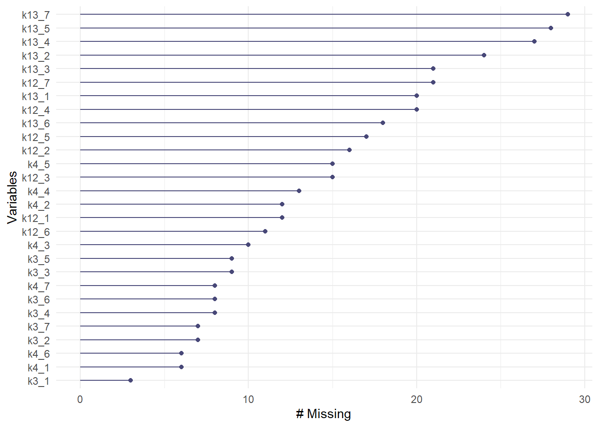

Osiossa käytetyt paketit
library(ggstatsplot)
library(naniar)
library(HH)
library(EFAtools)
library(lavaan)
library(dynamic)
library(semTools)
library(moments)
library(tidyverse) # Tidyverse viimeiseksi, sillä HH:ssa useat dplyrin funktiot peittyvätTässä osiossa suoritamme tilastollisen validoinnin epäasiallisen ja väkivaltaisen kohtelun esiintyvyyden mittarille. Osio liittyy rekisteröityyn tutkimusraporttiin “Epäasiallisen ja väkivaltaisen kohtelun suomen- ja ruotsinkielisen mittarin validointi pelastus- ja ensihoitoalalla” (Saal, Silfverhuth & Huovinen, 2024). Viittaamme raportin rekisteröityihin protokolliin tekstissä.
library(ggstatsplot)
library(naniar)
library(HH)
library(EFAtools)
library(lavaan)
library(dynamic)
library(semTools)
library(moments)
library(tidyverse) # Tidyverse viimeiseksi, sillä HH:ssa useat dplyrin funktiot peittyvätdata <- read.csv2("output/anonymisoitudata.csv", tryLogical = FALSE)Raportin luvussa 2.1. (Kohderyhmä) esitimme neljä kohderyhmää, niiden määritelmät sekä niiden yhteenlasketut otoskoot (ks. raportin Taulukko 2). Nämä kohderyhmät määriteltiin kontrollimuuttujina luvussa 2.5. (Kontrollimuuttujat). Olemme poikenneet kohderyhmistä seuraavalla tavalla:
Järjestöjen kohderyhmään lisättiin myös alueellisten pelastusliittojen henkilöstö
Anonymisoinnissa jouduimme yhdistämään järjestöt ja koulutusorganisaatiot yhdeksi muuttujaksi, jotta heidän anonymiteettinsa säilyisivät.
Raportin luvussa 2.2. (Yhteydenottomenetelmät) esitimme jokaiselle kohderyhmälle eritellyt yhteydenottomenetelmät. Menetelmät tarkentuivat ja laajenivat rekisteröinnin jälkeen (ks. Luku 13). Poikkesimme suunnitelmasta seuraavalla tavalla:
Yhteydenottomenetelmät nimettiin uudelleen vastaamaan toteutettuja menetelmiä paremmin.
Vaihdoimme hyvinvointialueiden kirjaamot ja pelastuslaitosten viestinnät pelastuslaitosten ja ensihoidon yhteyshenkilöiksi.
Suomen Pelastusalan Keskusjärjestön kautta pelastusliittojen viestintään lähetetty viesti lähetettiin pelastusliittojen johdolle, samanaikaisesti kuin SPEK:n kautta pelastusliittojen johdolle lähetetty viesti.
Lisäsimme SPEK:n kautta sopimuspalokuntalaisten HAKA-järjestelmään ja siitä edelleen sopimuspalokunnille ja palokuntayhdistyksille välittetävä viesti. Tämä menetelmä laskettiin yhteyshenkilöiden ja viestinnän kautta välitettäväksi viestiksi.
Lisäsimme uutiskirjeet seuraavissa palveluissa: Palokuntaan.fi ja Pelastusopiston uutiskirjeet ensihoidolle, pelastustoimelle, onnettomuuksien ehkäisyyn sekä pelastustoimintaan. Nämä laskettiin yhteyshenkilöiden ja viestinnän kautta välitettäviksi viesteiksi.
Lisäsimme Spek.fi-sivustolla julkaistun tiedotteen sekä SSPL:n jäsenille lähetettävän tiedotteen. Nämä laskettiin median kautta välitettäviksi viesteiksi.
Lähetimme muistutusviestit järjestöjen ja koulutusorganisaatioiden johtajille, ensihoidon ja pelastuslaitosten yhteyshenkilöille sekä järjestöjen ja koulutusorganisaatioiden toimistoihin ja viestintään 3.9.2024.
Tiedonkeruu suoritettiin 15.8.-15.9.2024 välisenä aikana. Aineistoon kuuluu n = 1025 vastaajaa.
sukupuoli <- data |>
select(k31) |>
mutate(
k31 = factor(
k31,
labels = c("Nainen", "Mies", "Muu/EHV")
)
) |>
table() |>
as.data.frame() |>
mutate(
Pros = (Freq / nrow(data)) * 100
)Vastaajista 64.2 prosenttia (n = 658) olivat miehiä, 32.1 prosenttia (n = 329) olivat naisia ja 3.7 prosenttia (n = 38) muunsukupuolisia tai kieltäytyivät vastaamasta.
Verrattuna tunnettuihin sukupuolijakaumiin, aineistossa on yliedustettuna naissukupuoliset henkilöt.
kohderyhma <- data |>
select(k2) |>
mutate(
k2 = factor(
k2,
labels = c(
"Pelastuslaitos tai ensihoito",
"Sopimuspalokunta tai palokuntayhdistys",
"Järjestö, pelastusliitto tai koulu")
)
) |>
table() |>
as.data.frame() |>
mutate(
Pros = (Freq / nrow(data)) * 100
)Vastaajista 58.8 prosenttia (n = 603) olivat pelastuslaitokselta tai ensihoidosta, 33.3 prosenttia (n = 341) olivat sopimuspalokunnista tai palokuntayhdistyksistä ja 7.9 prosenttia (n = 81) olivat järjestöistä, pelastusliitoista tai koulutusorganisaatioista.
Kohderyhmätaulukon mukaan pelastuslaitosten ja ensihoidon osuus koko kohderyhmästä on noin 23,9 prosenttia, sopimuspalokuntien ja palokuntayhdistysten osuus noin 73,8 prosenttia, ja yhdistysten sekä koulutusorganisaatioiden yhteenlaskettu osuus noin 2,2 prosenttia. Aineistossamme on selkeästi yliedustettuina pelastuslaitokset ja ensihoito sekä hieman pienemmässä määrässä järjestöt, liitot ja koulutusorganisaatiot, ja aliedustettuina sopimuspalokunnat ja palokuntayhdistykset.
ophenk_n <- data |>
filter(Organisaatioasema == 2) |>
filter(k2 == 1) |>
nrow() - 70 # 70 henkilöä ovat alinta johtoa, eivätkä vastanneet suorittavan henkilöstön osuuteen. Jotta prosenttiosuudet olisivat oikein, arvoa on korjattava tämän verran.
ammattiasema <- data |>
filter(Organisaatioasema == 2) |>
select(k40) |>
mutate(
k40 = factor(
k40,
levels = c(1, 2, 3, -1),
labels = c(
"Pelastaja",
"Ensihoitaja",
"Muu",
"Sopimuspalokuntalainen operatiivisessa toiminnassa"
)
)
) |>
table() |>
as.data.frame() |>
mutate(
Pros = (Freq / ophenk_n) * 100
)Operatiivista toimintaa suorittavasta pelastuslaitosten ja ensihoidon henkilöstöstä (n = 3581) 35.2 prosenttia (n = 126) olivat pelastajia, 58.7 prosenttia (n = 210) olivat ensihoitajia ja 6.1 prosenttia (n = 22) ilmoittivat muun ammattiryhmän.
1 Operatiiviseen henkilöstöön kuuluvat sekä suorittava henkilöstö (pelastajat, ensihoitajat) että alin johto (ryhmänjohtajat). Alin johto ei kuitenkaan kyselyvirheen takia vastanneet kysymykseen suorittavalle henkilöstölle. Tämän takia määrät ja prosenttiosuudet eivät vastaa todellisia. Prosenttiosuudet on laskettu käsin jakamalla kunkin ryhmän osiot oikealla otoskoolla (n = 428 operatiivista henkilöstöä - 70 alinta johtoa = 358 suorittavaa henkilöstöä).
Kohderyhmätaulukon mukaisesti pelastajien osuus pelastuslaitosten henkilöstöstä on noin 49,4 prosenttia, ensihoitajien osuus noin 42,0 prosenttia ja muun henkilöstön osuus noin 8,6 prosenttia. Otoksessamme ensihoitajat ovat lievästi yliedustettuna ja pelastajat vastaavasti aliedustettuna, muun henkilöstön osuus vastaa käytännössä populaation osuutta.
kieli <- data |>
select(Kieliversio) |>
mutate(
Kieliversio = factor(
Kieliversio,
labels = c(
"Suomi",
"Ruotsi"
)
)
) |>
table() |>
as.data.frame() |>
mutate(
Pros = (Freq / nrow(data)) * 100
)Vastaajista 93.8 prosenttia (n = 961) vastasivat suomeksi ja 6.2 prosenttia (n = 64) vastasivat ruotsiksi. Vastauskieli ei välttämättä edusta äidinkielen tai käytetyn kielen jakautumista kohdepopulaatiossa.
yhteydenotto <- data |>
select(Linkkiversio) |>
mutate(
Linkkiversio = factor(
Linkkiversio,
labels = c(
"Johdon kautta",
"Henkilöstön kautta",
"Median kautta"
)
)
) |>
table() |>
as.data.frame() |>
mutate(
Pros = (Freq / nrow(data)) * 100
)Vastaajista 23.7 prosenttia (n = 243) vastasivat johdon kautta välitettyyn linkkiin, 40.4 prosenttia (n = 414) vastasivat yhteyshenkilöiden tai toimistojen kautta välitettyyn linkkiin, ja 35.9 prosenttia (n = 368) vastasivat median kautta välitettyyn linkkiin.
# Korjataan muuttujien järjestys putkessa myöhemmin
jarjestys <- c(
"k3_1", "k3_2", "k3_3", "k3_4", "k3_5", "k3_6", "k3_7",
"k4_1", "k4_2", "k4_3", "k4_4", "k4_5", "k4_6", "k4_7",
"k12_1", "k12_2", "k12_3", "k12_4", "k12_5", "k12_6", "k12_7",
"k13_1", "k13_2", "k13_3", "k13_4", "k13_5", "k13_6", "k13_7"
)
kohtelu <- data |>
select(k3_1:k4_7, k12_1:k13_7) |>
summarise(
across(
everything(),
list(
mean = ~ round(mean(.x, na.rm = TRUE), digits = 2),
sd = ~ round(sd(.x, na.rm = TRUE), digits = 2),
skew = ~ round(skewness(.x, na.rm = TRUE), digits = 2),
kurtosis = ~ round(kurtosis(.x, na.rm = TRUE), digits = 2),
n = ~ sum(!is.na(.x))
)
)
) |>
pivot_longer(
cols = everything(),
names_to = c("variable", "statistic"),
names_pattern = "^(.*_\\d+)_(.*)$"
) |>
pivot_wider(
names_from = statistic,
values_from = value
) |>
arrange(
factor(variable, levels = jarjestys)
)
colnames(kohtelu) <- c("Muuttuja", "Keskiarvo", "Keskihajonta", "Vinous", "Huipukkuus", "Validi N")
kohtelu |>
knitr::kable()| Muuttuja | Keskiarvo | Keskihajonta | Vinous | Huipukkuus | Validi N |
|---|---|---|---|---|---|
| k3_1 | 0.42 | 0.87 | 2.88 | 12.84 | 1022 |
| k3_2 | 0.08 | 0.31 | 4.51 | 27.94 | 1018 |
| k3_3 | 0.16 | 0.53 | 4.73 | 31.02 | 1016 |
| k3_4 | 0.03 | 0.17 | 7.17 | 59.36 | 1017 |
| k3_5 | 0.16 | 0.55 | 5.16 | 41.56 | 1016 |
| k3_6 | 0.69 | 1.06 | 2.04 | 7.99 | 1017 |
| k3_7 | 0.47 | 1.01 | 2.95 | 13.21 | 1017 |
| k4_1 | 0.49 | 0.88 | 2.31 | 9.04 | 1019 |
| k4_2 | 0.08 | 0.33 | 6.02 | 60.25 | 1013 |
| k4_3 | 0.17 | 0.52 | 3.95 | 22.67 | 1015 |
| k4_4 | 0.03 | 0.19 | 6.01 | 41.77 | 1012 |
| k4_5 | 0.25 | 0.62 | 3.34 | 17.84 | 1010 |
| k4_6 | 0.72 | 1.05 | 1.86 | 7.01 | 1019 |
| k4_7 | 0.51 | 0.98 | 2.57 | 11.00 | 1016 |
| k12_1 | 0.68 | 1.06 | 1.88 | 6.51 | 1013 |
| k12_2 | 0.11 | 0.34 | 3.11 | 12.54 | 1008 |
| k12_3 | 0.48 | 0.87 | 2.20 | 8.46 | 1010 |
| k12_4 | 0.19 | 0.51 | 4.56 | 41.78 | 1004 |
| k12_5 | 0.30 | 0.73 | 2.98 | 13.33 | 1008 |
| k12_6 | 0.81 | 1.19 | 1.71 | 5.85 | 1014 |
| k12_7 | 0.21 | 0.61 | 4.06 | 24.19 | 1003 |
| k13_1 | 0.69 | 1.07 | 1.75 | 5.88 | 1005 |
| k13_2 | 0.12 | 0.38 | 3.62 | 18.34 | 1000 |
| k13_3 | 0.54 | 0.97 | 2.17 | 8.04 | 1004 |
| k13_4 | 0.23 | 0.52 | 2.44 | 9.04 | 997 |
| k13_5 | 0.35 | 0.76 | 2.51 | 9.66 | 997 |
| k13_6 | 0.80 | 1.17 | 1.72 | 5.90 | 1007 |
| k13_7 | 0.22 | 0.62 | 3.76 | 20.78 | 994 |
kohtelu_korr <- data |>
select(k3_1:k4_7, k12_1:k13_7) |>
cor(method = "pearson", use = "pairwise.complete.obs")
data |>
select(k3_1:k4_7, k12_1:k13_7) |>
ggcorrmat(
ggcorrplot.args = list(lab_size = 1, tl.cex = 7, tl.srt = 90)
) +
geom_vline(xintercept = 7.5, color = "black", size = 0.5) +
geom_vline(xintercept = 14.5, color = "black", size = 0.5) +
geom_vline(xintercept = 21.5, color = "black", size = 0.5) +
geom_hline(yintercept = 6.5, color = "black", size = 0.5) +
geom_hline(yintercept = 13.5, color = "black", size = 0.5) +
geom_hline(yintercept = 20.5, color = "black", size = 0.5)Epäasiallisen ja väkivaltaisen kohtelun mittarit näyttävät korreloivan kahdessa osiossa: organisaatiosisäiset mittarit korreloivat toistensa kanssa merkitsevästi ja keskikokoisilla tai jopa suurilla kerroimilla, ja sama koskee organisaatioulkoisia mittareita. Mittarit korreloivat keskenään kuitenkin heikommin ja useammin ei-merkitsevästi, kuten näkyy korrelelogramin ylävasemmasta kulmasta (Kuva 27.1).
Korrelaatioiden vahvuudet vaihtelevat välillä \(r = -0.0086432 - 0.8676319\). Pääsääntöisesti korrelaatiot ovat positiivisia. Korrelaatiomatriisin determinantti on \(\det A = 1.5871233\times 10^{-10}\).
# Korjataan muuttujien järjestys putkessa myöhemmin
jarjestys <- c("k27_1", "k27_2", "k27_3", "k27_4")
uupumus <- data |>
select(k27_1:k27_4) |>
summarise(
across(
everything(),
list(
mean = ~ round(mean(.x, na.rm = TRUE), digits = 2),
sd = ~ round(sd(.x, na.rm = TRUE), digits = 2),
skew = ~ round(skewness(.x, na.rm = TRUE), digits = 2),
kurtosis = ~ round(kurtosis(.x, na.rm = TRUE), digits = 2),
n = ~ sum(!is.na(.x))
)
)
) |>
pivot_longer(
cols = everything(),
names_to = c("variable", "statistic"),
names_pattern = "^(.*_\\d+)_(.*)$"
) |>
pivot_wider(
names_from = statistic,
values_from = value
) |>
arrange(
factor(variable, levels = jarjestys)
)
colnames(uupumus) <- c("Muuttuja", "Keskiarvo", "Keskihajonta", "Vinous", "Huipukkuus", "Validi N")
uupumus |>
knitr::kable()| Muuttuja | Keskiarvo | Keskihajonta | Vinous | Huipukkuus | Validi N |
|---|---|---|---|---|---|
| k27_1 | 2.25 | 0.99 | 0.52 | 2.76 | 1008 |
| k27_2 | 2.04 | 0.99 | 0.79 | 3.09 | 1005 |
| k27_3 | 2.05 | 0.87 | 0.72 | 3.46 | 1010 |
| k27_4 | 1.67 | 0.80 | 1.55 | 6.46 | 1005 |
uupumus_korr <- data |>
select(k27_1:k27_4) |>
cor(method = "pearson", use = "pairwise.complete.obs")
data |>
select(k27_1:k27_4) |>
ggcorrmat()
Korrelaatiot ovat kaikki merkitsevästi positiivisia ja vaihtelevat välillä \(r = 0.3085461 - 0.5980133\). Korrelaatiomatriisin determinantti on \(\det A = 0.3402493\).
valitut <- data |>
select(k3_1:k4_7, k12_1:k13_7)
puuttuvat_valitut <- data |>
select(k3_1:k4_7, k12_1:k13_7, k2, k40, Kieliversio, Linkkiversio) |>
mutate(
across(
k3_1:k13_7,
~ case_match(
.x,
NA ~ 1,
.default = 0
)
)
)# Kuvailevat mitat esiintyvyys- ja työuupumusmittareille
write.csv2(
x = bind_rows(kohtelu, uupumus),
file = "output/validointiartikkeli_kuvailevatmitat.csv"
)
# Kovarianssi- ja keskiarvomatriisi
matriisi <- data |>
select(k3_1:k4_7, k12_1:k13_7, k27_1:k27_4) |>
cov(
use = "pairwise.complete.obs",
method = "pearson"
)
matriisi[upper.tri(matriisi, diag = TRUE)] <- NA
ka <- data |>
select(k3_1:k4_7, k12_1:k13_7, k27_1:k27_4) |>
summarise(
across(
everything(),
~ mean(.x, na.rm = TRUE)
)
) |>
as.numeric()
matriisi <- rbind(matriisi, ka)
write.csv2(
x = matriisi,
file = "output/validointiartikkeli_matriisi.csv"
)gg_miss_var(valitut)
gg_miss_upset(
valitut,
nsets = 28,
point.size = 1.0,
text.scale = 0.5
)
Puuttuvia arvoja esiintyy eniten organisaation ulkopuolelta tulleen kollegahavaintojen muuttujien ryhmässä (Kuva 27.3). Vähiten esiintyy vastaavasti organisaation sisällä omakohtaisten kokemusten ryhmässä.
Upset-kuvio (Kuva 27.4) osoittaa, että kun organisaatiosisäisillä muuttujilla puuttuu vastaus, puute heijastuu usein muihin organisaatiosisäisiin muuttujiin. Samalla tavalla organisaatioulkoisten muuttujien puute heijastuu toisiin organisaatioulkoisiin muuttujiin.
valitut |>
mcar_test() |>
knitr::kable()| statistic | df | p.value | missing.patterns |
|---|---|---|---|
| 2024.162 | 1333 | 0 | 61 |
Littlen MCAR-testi on merkitsevä, osoittaen, että puuttuvat vastaukset mitä luultavammin eivät ole täysin satunnaisesti puuttuvia (engl. missing completely at random) (p < .05). Merkitsevyys voi osittain johtua suuresta otoskoosta, mutta todisteet osoittaisivat kuitenkin, että puuttuvissa vastauksissa on jonkin tapaista systematiikkaa.
data_long <- puuttuvat_valitut |>
pivot_longer(
cols = k3_1:k13_7,
names_to = "variable",
values_to = "value"
)
kontingenssi <- data_long |>
filter(value == 1) |>
group_by(variable, k2) |>
summarise(count = n(), .groups = "drop") |>
pivot_wider(
names_from = k2,
values_from = count,
values_fill = 0
)
khiinelio <- data_long |>
group_by(variable) |>
summarise(
khii2 = list(
chisq.test(table(value, k2))
),
.groups = "drop"
) |>
mutate(
p = map_dbl(khii2, ~ .x$p.value),
khii2 = map_dbl(khii2, ~ .x$statistic)
) |>
select(variable, p, khii2)
vrt.kohderyhmat <- left_join(kontingenssi, khiinelio, by = "variable")
write.csv2(vrt.kohderyhmat, file = "output/khii_kohderyhmat.csv")
knitr::kable(vrt.kohderyhmat)| variable | 1 | 2 | 3 | p | khii2 |
|---|---|---|---|---|---|
| k12_1 | 7 | 1 | 4 | 0.0022352 | 12.2068153 |
| k12_2 | 13 | 2 | 2 | 0.1617400 | 3.6435303 |
| k12_3 | 9 | 4 | 2 | 0.6800659 | 0.7711310 |
| k12_4 | 14 | 4 | 3 | 0.2681367 | 2.6325167 |
| k12_5 | 12 | 3 | 2 | 0.3677684 | 2.0006036 |
| k12_6 | 8 | 3 | 0 | 0.5056236 | 1.3639256 |
| k12_7 | 15 | 4 | 3 | 0.2456391 | 2.8077836 |
| k13_1 | 14 | 4 | 2 | 0.4436029 | 1.6256511 |
| k13_2 | 19 | 4 | 2 | 0.1668432 | 3.5814016 |
| k13_3 | 14 | 5 | 2 | 0.6467029 | 0.8717365 |
| k13_4 | 21 | 5 | 2 | 0.1867824 | 3.3556221 |
| k13_5 | 21 | 5 | 2 | 0.1867824 | 3.3556221 |
| k13_6 | 12 | 5 | 1 | 0.7846554 | 0.4850212 |
| k13_7 | 25 | 4 | 2 | 0.0358577 | 6.6563953 |
| k3_1 | 3 | 0 | 0 | 0.3489479 | 2.1056654 |
| k3_2 | 6 | 1 | 0 | 0.3351516 | 2.1863447 |
| k3_3 | 8 | 1 | 0 | 0.1779945 | 3.4520049 |
| k3_4 | 6 | 2 | 0 | 0.5595486 | 1.1612497 |
| k3_5 | 8 | 1 | 0 | 0.1779945 | 3.4520049 |
| k3_6 | 6 | 2 | 0 | 0.5595486 | 1.1612497 |
| k3_7 | 6 | 2 | 0 | 0.5595486 | 1.1612497 |
| k4_1 | 4 | 1 | 1 | 0.5628028 | 1.1496518 |
| k4_2 | 9 | 1 | 2 | 0.1360695 | 3.9891789 |
| k4_3 | 7 | 1 | 2 | 0.1550611 | 3.7278718 |
| k4_4 | 8 | 3 | 2 | 0.5065442 | 1.3602875 |
| k4_5 | 11 | 2 | 2 | 0.2309698 | 2.9309370 |
| k4_6 | 5 | 1 | 0 | 0.4509169 | 1.5929444 |
| k4_7 | 4 | 2 | 3 | 0.0175697 | 8.0831625 |
Taulukon 27.4 mukaan useimpien muuttujien puuttuvien arvojen määrät eivät eroa kohderyhmien välillä merkitsevästi. Poikkeuksena ovat muuttujat k12_1, k13_7 ja k4_7, eli organisaatioulkoisen omakohtaisesti koetun verbaalisen väkivallan, organisaatioulkoisen kollegahavaitun syrjinnän sekä organisaatiosisäisen kollegahavaitun syrjinnän muuttujat. On kuitenkin huomattava, että määrät ovat hyvin pieniä, ja käytännössä jokainen testi sisältää odotettuja soluja, joiden koot ovat alle 5 havaintoa, jolloin khii neliö -testi ei ole luotettava riippuvuustesti. Poikkeuksena voidaan nähdä organisaatioulkoisen kollegahavaitun syrjinnän muuttuja, jossa on moninkertaisesti enemmän puuttuvia arvoja pelastuslaitosten ja ensihoidon kohderyhmässä kuin muissa.
data_long <- puuttuvat_valitut |>
filter(between(k40, 1, 2)) |>
pivot_longer(
cols = k3_1:k13_7,
names_to = "variable",
values_to = "value"
)
kontingenssi <- data_long |>
filter(value == 1) |>
group_by(variable, k40) |>
summarise(count = n(), .groups = "drop") |>
pivot_wider(
names_from = k40,
values_from = count,
values_fill = 0
)
khiinelio <- data_long |>
group_by(variable) |>
summarise(
khii2 = list(
chisq.test(table(value, k40))
),
.groups = "drop"
) |>
mutate(
p = map_dbl(khii2, ~ .x$p.value),
khii2 = map_dbl(khii2, ~ .x$statistic)
) |>
select(variable, p, khii2)
vrt.ammattiryhmat <- left_join(kontingenssi, khiinelio, by = "variable")
write.csv2(vrt.ammattiryhmat, file = "output/khii_ammattiryhmat.csv")
knitr::kable(vrt.ammattiryhmat)| variable | 1 | 2 | p | khii2 |
|---|---|---|---|---|
| k12_1 | 1 | 0 | 0.7959562 | 0.0668657 |
| k12_2 | 3 | 2 | 0.5607724 | 0.3383686 |
| k12_3 | 3 | 0 | 0.0995266 | 2.7131131 |
| k12_4 | 3 | 2 | 0.5607724 | 0.3383686 |
| k12_5 | 2 | 2 | 1.0000000 | 0.0000000 |
| k12_6 | 1 | 1 | 1.0000000 | 0.0000000 |
| k12_7 | 5 | 3 | 0.2675494 | 1.2292683 |
| k13_1 | 4 | 3 | 0.4899684 | 0.4765957 |
| k13_2 | 5 | 3 | 0.2675494 | 1.2292683 |
| k13_3 | 4 | 2 | 0.2874954 | 1.1313131 |
| k13_4 | 5 | 6 | 0.8122928 | 0.0563916 |
| k13_5 | 5 | 5 | 0.6189388 | 0.2473620 |
| k13_6 | 3 | 3 | 0.8315404 | 0.0452525 |
| k13_7 | 6 | 6 | 0.5437005 | 0.3687243 |
| k3_1 | 1 | 1 | 1.0000000 | 0.0000000 |
| k3_2 | 2 | 1 | 0.6532704 | 0.2018018 |
| k3_3 | 4 | 2 | 0.2874954 | 1.1313131 |
| k3_4 | 2 | 1 | 0.6532704 | 0.2018018 |
| k3_5 | 2 | 2 | 1.0000000 | 0.0000000 |
| k3_6 | 2 | 1 | 0.6532704 | 0.2018018 |
| k3_7 | 1 | 1 | 1.0000000 | 0.0000000 |
| k4_1 | 1 | 1 | 1.0000000 | 0.0000000 |
| k4_2 | 2 | 3 | 1.0000000 | 0.0000000 |
| k4_3 | 2 | 2 | 1.0000000 | 0.0000000 |
| k4_4 | 2 | 2 | 1.0000000 | 0.0000000 |
| k4_5 | 2 | 3 | 1.0000000 | 0.0000000 |
| k4_6 | 1 | 1 | 1.0000000 | 0.0000000 |
| k4_7 | 1 | 0 | 0.7959562 | 0.0668657 |
Taulukon 27.5 mukaan mikään muuttuja ei eroa merkitsevästi puuttuvien vastausten määrässä pelastajien ja ensihoitajien välillä. Puuttuvia arvoja on hyvin vähän, joten khii neliö-testit eivät ole luotettavia, mutta puuttuminen ei myöskään oletettavasti aiheuta haittaa mallille myöhemmässä vaiheessa.
data_long <- puuttuvat_valitut |>
pivot_longer(
cols = k3_1:k13_7,
names_to = "variable",
values_to = "value"
)
kontingenssi <- data_long |>
filter(value == 1) |>
group_by(variable, Kieliversio) |>
summarise(count = n(), .groups = "drop") |>
pivot_wider(
names_from = Kieliversio,
values_from = count,
values_fill = 0
)
khiinelio <- data_long |>
group_by(variable) |>
summarise(
khii2 = list(
chisq.test(table(value, Kieliversio))
),
.groups = "drop"
) |>
mutate(
p = map_dbl(khii2, ~ .x$p.value),
khii2 = map_dbl(khii2, ~ .x$statistic)
) |>
select(variable, p, khii2)
vrt.kieli <- left_join(kontingenssi, khiinelio, by = "variable")
write.csv2(vrt.kieli, file = "output/khii_kieli.csv")
knitr::kable(vrt.kieli)| variable | 1 | 2 | p | khii2 |
|---|---|---|---|---|
| k12_1 | 12 | 0 | 0.7648168 | 0.0894976 |
| k12_2 | 17 | 0 | 0.5703435 | 0.3221081 |
| k12_3 | 15 | 0 | 0.6388194 | 0.2202896 |
| k12_4 | 21 | 0 | 0.4597504 | 0.5465023 |
| k12_5 | 16 | 1 | 1.0000000 | 0.0000000 |
| k12_6 | 10 | 1 | 1.0000000 | 0.0000000 |
| k12_7 | 20 | 2 | 0.9103929 | 0.0126659 |
| k13_1 | 18 | 2 | 0.8146192 | 0.0549767 |
| k13_2 | 23 | 2 | 1.0000000 | 0.0000000 |
| k13_3 | 19 | 2 | 0.8634107 | 0.0295958 |
| k13_4 | 26 | 2 | 1.0000000 | 0.0000000 |
| k13_5 | 26 | 2 | 1.0000000 | 0.0000000 |
| k13_6 | 15 | 3 | 0.1762203 | 1.8292148 |
| k13_7 | 29 | 2 | 1.0000000 | 0.0000000 |
| k3_1 | 3 | 0 | 1.0000000 | 0.0000000 |
| k3_2 | 7 | 0 | 1.0000000 | 0.0000000 |
| k3_3 | 9 | 0 | 0.9316837 | 0.0073491 |
| k3_4 | 8 | 0 | 1.0000000 | 0.0000000 |
| k3_5 | 9 | 0 | 0.9316837 | 0.0073491 |
| k3_6 | 8 | 0 | 1.0000000 | 0.0000000 |
| k3_7 | 8 | 0 | 1.0000000 | 0.0000000 |
| k4_1 | 5 | 1 | 0.8319871 | 0.0450092 |
| k4_2 | 12 | 0 | 0.7648168 | 0.0894976 |
| k4_3 | 10 | 0 | 0.8702226 | 0.0266916 |
| k4_4 | 13 | 0 | 0.7191466 | 0.1293119 |
| k4_5 | 15 | 0 | 0.6388194 | 0.2202896 |
| k4_6 | 6 | 0 | 1.0000000 | 0.0000000 |
| k4_7 | 9 | 0 | 0.9316837 | 0.0073491 |
Taulukon 27.6 mukaan mikään muuttuja ei eroa merkitsevästi puuttuvien vastausten määrässä suomen- ja ruotsinkielisen kyselyn täyttäneiden välillä. Puuttuvia arvoja on hyvin vähän varsinkin ruotsinkielisen version täyttäneiden kesken, joten khii neliö-testit eivät ole luotettavia, mutta puuttuminen ei myöskään oletettavasti aiheuta haittaa mallille myöhemmässä vaiheessa.
data_long <- puuttuvat_valitut |>
pivot_longer(
cols = k3_1:k13_7,
names_to = "variable",
values_to = "value"
)
kontingenssi <- data_long |>
filter(value == 1) |>
group_by(variable, Linkkiversio) |>
summarise(count = n(), .groups = "drop") |>
pivot_wider(
names_from = Linkkiversio,
values_from = count,
values_fill = 0
)
khiinelio <- data_long |>
group_by(variable) |>
summarise(
khii2 = list(
chisq.test(table(value, Linkkiversio))
),
.groups = "drop"
) |>
mutate(
p = map_dbl(khii2, ~ .x$p.value),
khii2 = map_dbl(khii2, ~ .x$statistic)
) |>
select(variable, p, khii2)
vrt.yhteydenotto <- left_join(kontingenssi, khiinelio, by = "variable")
write.csv2(vrt.yhteydenotto, file = "output/khii_yhteydenotto.csv")
knitr::kable(vrt.yhteydenotto)| variable | 1 | 2 | 3 | p | khii2 |
|---|---|---|---|---|---|
| k12_1 | 4 | 3 | 5 | 0.5223076 | 1.2989972 |
| k12_2 | 6 | 5 | 6 | 0.4731774 | 1.4965698 |
| k12_3 | 5 | 4 | 6 | 0.5025804 | 1.3759993 |
| k12_4 | 6 | 8 | 7 | 0.8687793 | 0.2813323 |
| k12_5 | 4 | 5 | 8 | 0.5725345 | 1.1153644 |
| k12_6 | 2 | 3 | 6 | 0.4288419 | 1.6933338 |
| k12_7 | 7 | 8 | 7 | 0.6641201 | 0.8185845 |
| k13_1 | 4 | 8 | 8 | 0.8983378 | 0.2144182 |
| k13_2 | 8 | 9 | 8 | 0.6143776 | 0.9742910 |
| k13_3 | 6 | 8 | 7 | 0.8687793 | 0.2813323 |
| k13_4 | 8 | 11 | 9 | 0.8149292 | 0.4093081 |
| k13_5 | 6 | 12 | 10 | 0.9480444 | 0.1067078 |
| k13_6 | 3 | 7 | 8 | 0.6819211 | 0.7656827 |
| k13_7 | 9 | 13 | 9 | 0.6631564 | 0.8214887 |
| k3_1 | 1 | 2 | 0 | 0.4248211 | 1.7121741 |
| k3_2 | 2 | 3 | 2 | 0.9109817 | 0.1864650 |
| k3_3 | 3 | 5 | 1 | 0.2972684 | 2.4262396 |
| k3_4 | 2 | 3 | 3 | 0.9860528 | 0.0280907 |
| k3_5 | 2 | 3 | 4 | 0.8585899 | 0.3049279 |
| k3_6 | 2 | 3 | 3 | 0.9860528 | 0.0280907 |
| k3_7 | 2 | 3 | 3 | 0.9860528 | 0.0280907 |
| k4_1 | 3 | 2 | 1 | 0.2928304 | 2.4563236 |
| k4_2 | 5 | 4 | 3 | 0.3322652 | 2.2036434 |
| k4_3 | 4 | 4 | 2 | 0.3980353 | 1.8424292 |
| k4_4 | 3 | 6 | 4 | 0.9016147 | 0.2071359 |
| k4_5 | 6 | 6 | 3 | 0.2494086 | 2.7773252 |
| k4_6 | 1 | 3 | 2 | 0.8714117 | 0.2752814 |
| k4_7 | 5 | 2 | 2 | 0.0780800 | 5.1000432 |
Taulukon 27.7 mukaan mikään muuttuja ei eroa merkitsevästi puuttuvien vastausten määrässä yhteydenottomenetelmien välillä. Poikkeuksena voi olla muuttuja k4_7, eli organisaatiosisäisesti kollegahavaittu syrjintä, joka mahdollisesti eroaa menetelmien välillä. P-arvo on kuitenkin yli vakiintuneen raja-arvon (p = .078), ja datan vähyys heikentää testin luotettavuutta.
set.seed(987320)
otos <- sample(c(1, 2), replace = TRUE, nrow(data), prob = c(0.3, 0.7))
data <- data |>
add_column(
otos = otos,
.after = "ID"
)
data.efa <- data |>
filter(otos == 1)
data.cfa <- data |>
filter(otos == 2)# Mahalanobiksen etäisyys ja merkitsevyys
data.efa$mahalanobis <- mahalanobis(
x = data.efa |> select(k3_1:k4_7, k12_1:k13_7),
center = data.efa |> select(k3_1:k4_7, k12_1:k13_7) |> colMeans(na.rm = TRUE),
cov = data.efa |> select(k3_1:k4_7, k12_1:k13_7) |> cov(use = "pairwise.complete.obs", method = "pearson")
)
data.efa$mahalanobis.p <- data.efa |>
select(mahalanobis) |>
unlist() |>
as.double() |>
pchisq(
df = data.efa |> select(k3_1:k4_7, k12_1:k13_7) |> ncol() - 1
)
# Kerätään kaikki tulokset yhteen listaan
tulokset.efa.sopivuus <- list()
# Mahalanobiksen pohjalta poistettavat vastaajat
tulokset.efa.sopivuus$poisto_n <- data.efa |>
filter(mahalanobis.p < .001) |>
summarise(n()) |>
as.numeric()
# Bartlettin testi
tulokset.efa.sopivuus$bart <- data.efa |>
select(k3_1:k4_7, k12_1:k13_7) |>
BARTLETT()
# KMO-suure
tulokset.efa.sopivuus$kmosuure <- data.efa |>
select(k3_1:k4_7, k12_1:k13_7) |>
KMO()
# Korrelaatiomatriisin determinantti
tulokset.efa.sopivuus$determinantti <- data.efa |>
select(k3_1:k4_7, k12_1:k13_7) |>
cor(method = "pearson", use = "pairwise.complete.obs") |>
det()
# VIF-arvot
tulokset.efa.sopivuus$vif <- data.efa |>
select(k3_1:k4_7, k12_1:k13_7) |>
vif()
# Hullin menetelmä
tulokset.efa.sopivuus$hull <- data.efa |>
select(k3_1:k4_7, k12_1:k13_7) |>
HULL(
method = "ML",
eigentype = "SMC",
decision_rule = "percentile"
)Mahalanobiksen etäisyyden merkitsevyystestaus (p < .001) osoittaa, että yhteensä 118 vastaajaa pitäisi poistaa mallista.
KMO-suureen koko on 0.8443061.
Bartlettin testi on merkitsevä (\(\chi^2 = 7379.8852978, \text{df} = 378, p = 0\)).
Korrelaatiomatriisin determinantti on 5.5931073^{-12}.
Kolmella muutujalla on VIF-suureet yli 10: k12_1, k13_1 ja k13_3. Näiden lisäksi muuttujat k12_3 ja k13_6 ovat yli 9, eli lähellä raja-arvoa.
Hullin menetelmän tulokset riippuvat käytetystä sopivuusindeksistä. CAF-indeksi ehdottaa 2 faktoria, CFI ehdottaa 1 faktoria ja RMSEA ehdottaa 1 faktoria.
Tulokset osoittavat kolmea suurempaa ongelmaa: Mahalanobiksen etäisyyden mukaan noin kolmannes vastaajista pitäisi poistaa mallista, Hullin menetelmän tulokset ovat osittain ristiriitaisia ja ehdottavat joko yhtä tai kahta faktoria, ja korrelaatiomatriisin determinantti on koko aineistolle liian pieni ja osoittaa multikollineariteettia.
Jos vertaamme determinanttiongelmaa aikaisemmin tarkistettuun korrelaatiomatriisiin (Kuva 27.1), ongelmallisia korrelaatioita (r > 0.8) esiintyy vain organisaatioulkoisten muuttujien ryhmässä. Suurimpana ongelmana on omakohtaisesti koettujen ja kollegan kautta havaittujen kohtelujen korrelaatioissa, jossa suurin korrelaatio on jopa r = 0.87.
Tarkistimme, jos ongelma johtuu ensisijaisesti organisaatioulkoisten muuttujien tekokontekstiryhmien välisistä korrelaatioista poistamalla kollegan kautta havaitut muuttujat analyysista.
# Tehdään uusi df testausta varten
data.efa2 <- data.efa
# Mahalanobiksen etäisyys ja merkitsevyys
data.efa2$mahalanobis <- mahalanobis(
x = data.efa2 |> select(k3_1:k3_7, k12_1:k12_7),
center = data.efa2 |> select(k3_1:k3_7, k12_1:k12_7) |> colMeans(na.rm = TRUE),
cov = data.efa2 |> select(k3_1:k3_7, k12_1:k12_7) |> cov(use = "pairwise.complete.obs", method = "pearson")
)
data.efa2$mahalanobis.p <- data.efa2 |>
select(mahalanobis) |>
unlist() |>
as.double() |>
pchisq(
df = data.efa2 |> select(k3_1:k3_7, k12_1:k12_7) |> ncol() - 1
)
# Kerätään kaikki tulokset yhteen listaan
tulokset.efa2.sopivuus <- list()
# Mahalanobiksen pohjalta poistettavat vastaajat
tulokset.efa2.sopivuus$poisto_n <- data.efa2 |>
filter(mahalanobis.p < .001) |>
summarise(n()) |>
as.numeric()
# Bartlettin testi
tulokset.efa2.sopivuus$bart <- data.efa2 |>
select(k3_1:k3_7, k12_1:k12_7) |>
BARTLETT()
# KMO-suure
tulokset.efa2.sopivuus$kmosuure <- data.efa2 |>
select(k3_1:k3_7, k12_1:k12_7) |>
KMO()
# Korrelaatiomatriisin determinantti
tulokset.efa2.sopivuus$determinantti <- data.efa2 |>
select(k3_1:k3_7, k12_1:k12_7) |>
cor(method = "pearson", use = "pairwise.complete.obs") |>
det()
# VIF-arvot
tulokset.efa2.sopivuus$vif <- data.efa2 |>
select(k3_1:k3_7, k12_1:k12_7) |>
vif()
# Hullin menetelmä
tulokset.efa2.sopivuus$hull <- data.efa2 |>
select(k3_1:k3_7, k12_1:k12_7) |>
HULL(
method = "ML",
eigentype = "SMC",
decision_rule = "percentile"
)Mahalanobiksen etäisyyden merkitsevyystestaus (p < .001) osoittaa, että yhteensä 119 vastaajaa pitäisi poistaa mallista.
KMO-suureen koko on 0.8516718.
Bartlettin testi on merkitsevä (\(\chi^2 = 2315.2653036, \text{df} = 91, p = 0\)).
Korrelaatiomatriisin determinantti on 3.3631505^{-4}.
Kaikkien muuttujien VIF-suureet ovat alle 10. Suurin VIF-suure on muuttujalla k12_1 (VIF = 5.7554944).
Hullin menetelmän tulokset riippuvat käytetystä sopivuusindeksistä. CAF-indeksi ehdottaa 1 faktoria, CFI ehdottaa 2 faktoria ja RMSEA ehdottaa 2 faktoria.
Koska tulokset osoittavat useita eri ristiriitoja, päätimme ajaa yhteensä 4 eri mallia kahdessa ryhmässä. Mallit 1A ja 1B käyttävät kaikkia 28 muuttujaa. Mallit 2A ja 2B käyttävät vain omakohtaisesti koettuja kokemuksia, eli 14 muuttujaa. A-malleissa sovitimme yhden faktorin mallin kaikille vastaajille (Mallit 1A, 2A) ja B-malleissa sovitimme kahden faktorin mallin kaikille vastaajille (Mallit 1B, 2B).
efa.malli.1A <- data.efa |>
select(k3_1:k4_7, k12_1:k13_7) |>
efa(
nfactors = 1,
rotation = "oblimin",
estimator = "ML",
missing = "fiml"
)
yhteenveto.efa.1A <- summary(
efa.malli.1A,
fit.measures = TRUE,
ci = TRUE,
efa = TRUE,
cutoff = 0
)
efa.malli.1B <- data.efa |>
select(k3_1:k4_7, k12_1:k13_7) |>
efa(
nfactors = 2,
rotation = "oblimin",
estimator = "ML",
missing = "fiml"
)
yhteenveto.efa.1B <- summary(
efa.malli.1B,
fit.measures = TRUE,
ci = TRUE,
efa = TRUE,
cutoff = 0
)
efa.malli.2A <- data.efa2 |>
select(k3_1:k3_7, k12_1:k12_7) |>
efa(
nfactors = 1,
rotation = "oblimin",
estimator = "ML",
missing = "fiml"
)
yhteenveto.efa.2A <- summary(
efa.malli.2A,
fit.measures = TRUE,
ci = TRUE,
efa = TRUE,
cutoff = 0
)
efa.malli.2B <- data.efa2 |>
select(k3_1:k3_7, k12_1:k12_7) |>
efa(
nfactors = 2,
rotation = "oblimin",
estimator = "ML",
missing = "fiml"
)
yhteenveto.efa.2B <- summary(
efa.malli.2B,
fit.measures = TRUE,
ci = TRUE,
efa = TRUE,
cutoff = 0
)yhteenveto.efa.1AThis is lavaan 0.6-18 -- running exploratory factor analysis
Estimator ML
Rotation method OBLIMIN OBLIQUE
Oblimin gamma 0
Rotation algorithm (rstarts) GPA (30)
Standardized metric TRUE
Row weights None
Number of observations 296
Number of missing patterns 23
Fit measures:
aic bic sabic chisq df pvalue cfi rmsea
nfactors = 1 12235.3 12545.29 12278.9 4015.661 350 0 0.486 0.19
Eigenvalues correlation matrix:
ev1 ev2 ev3 ev4 ev5 ev6 ev7 ev8
10.3354 4.7977 1.8275 1.3272 1.3022 1.1559 0.9191 0.8294
ev9 ev10 ev11 ev12 ev13 ev14 ev15 ev16
0.7153 0.5875 0.5241 0.4433 0.4316 0.3452 0.3324 0.2958
ev17 ev18 ev19 ev20 ev21 ev22 ev23 ev24
0.2750 0.2379 0.2290 0.1877 0.1713 0.1465 0.1376 0.1314
ev25 ev26 ev27 ev28
0.1141 0.1006 0.0683 0.0311
Standardized loadings: (* = significant at 1% level)
f1 unique.var communalities
k3_1 0.246* 0.940 0.060
k3_2 0.238* 0.944 0.056
k3_3 0.257* 0.934 0.066
k3_4 0.138 0.981 0.019
k3_5 0.369* 0.864 0.136
k3_6 0.374* 0.860 0.140
k3_7 0.236* 0.944 0.056
k4_1 0.252* 0.936 0.064
k4_2 0.227* 0.949 0.051
k4_3 0.221* 0.951 0.049
k4_4 0.188* 0.964 0.036
k4_5 0.324* 0.895 0.105
k4_6 0.268* 0.928 0.072
k4_7 0.272* 0.926 0.074
k12_1 0.909* 0.173 0.827
k12_2 0.626* 0.608 0.392
k12_3 0.890* 0.208 0.792
k12_4 0.774* 0.401 0.599
k12_5 0.726* 0.473 0.527
k12_6 0.869* 0.244 0.756
k12_7 0.571* 0.674 0.326
k13_1 0.905* 0.181 0.819
k13_2 0.599* 0.641 0.359
k13_3 0.887* 0.213 0.787
k13_4 0.761* 0.421 0.579
k13_5 0.764* 0.416 0.584
k13_6 0.868* 0.246 0.754
k13_7 0.587* 0.656 0.344
f1
Sum of squared loadings 9.428
Proportion of total 1.000
Proportion var 0.337
Cumulative var 0.337yhteenveto.efa.1BThis is lavaan 0.6-18 -- running exploratory factor analysis
Estimator ML
Rotation method OBLIMIN OBLIQUE
Oblimin gamma 0
Rotation algorithm (rstarts) GPA (30)
Standardized metric TRUE
Row weights None
Number of observations 296
Number of missing patterns 23
Fit measures:
aic bic sabic chisq df pvalue cfi rmsea
nfactors = 2 10910.16 11319.79 10967.78 2636.527 323 0 0.674 0.158
Eigenvalues correlation matrix:
ev1 ev2 ev3 ev4 ev5 ev6 ev7 ev8
10.3354 4.7977 1.8275 1.3272 1.3022 1.1559 0.9191 0.8294
ev9 ev10 ev11 ev12 ev13 ev14 ev15 ev16
0.7153 0.5875 0.5241 0.4433 0.4316 0.3452 0.3324 0.2958
ev17 ev18 ev19 ev20 ev21 ev22 ev23 ev24
0.2750 0.2379 0.2290 0.1877 0.1713 0.1465 0.1376 0.1314
ev25 ev26 ev27 ev28
0.1141 0.1006 0.0683 0.0311
Standardized loadings: (* = significant at 1% level)
f1 f2 unique.var communalities
k3_1 0.774* -0.053 0.422 0.578
k3_2 0.478* 0.060 0.750 0.250
k3_3 0.726* -0.015 0.479 0.521
k3_4 0.445* -0.031 0.810 0.190
k3_5 0.345* 0.237* 0.775 0.225
k3_6 0.784* 0.079 0.341 0.659
k3_7 0.679* -0.011 0.543 0.457
k4_1 0.799* -0.039 0.380 0.620
k4_2 0.379* 0.084 0.830 0.170
k4_3 0.686* -0.030 0.541 0.459
k4_4 0.402* 0.037 0.828 0.172
k4_5 0.488* 0.147* 0.697 0.303
k4_6 0.784* -0.018 0.393 0.607
k4_7 0.675* 0.025 0.534 0.466
k12_1 -0.015 0.917* 0.167 0.833
k12_2 0.142* 0.571* 0.605 0.395
k12_3 -0.045 0.913* 0.190 0.810
k12_4 -0.041 0.789* 0.395 0.605
k12_5 -0.022 0.735* 0.469 0.531
k12_6 0.034 0.858* 0.245 0.755
k12_7 -0.029 0.580* 0.673 0.327
k13_1 0.048 0.889* 0.183 0.817
k13_2 0.101 0.559* 0.643 0.357
k13_3 -0.072* 0.918* 0.191 0.809
k13_4 0.064 0.736* 0.426 0.574
k13_5 -0.029 0.774* 0.413 0.587
k13_6 0.048 0.850* 0.250 0.750
k13_7 0.015 0.577* 0.661 0.339
f2 f1 total
Sum of sq (obliq) loadings 8.560 5.602 14.163
Proportion of total 0.604 0.396 1.000
Proportion var 0.306 0.200 0.506
Cumulative var 0.306 0.506 0.506
Factor correlations: (* = significant at 1% level)
f1 f2
f1 1.000
f2 0.302* 1.000 yhteenveto.efa.2AThis is lavaan 0.6-18 -- running exploratory factor analysis
Estimator ML
Rotation method OBLIMIN OBLIQUE
Oblimin gamma 0
Rotation algorithm (rstarts) GPA (30)
Standardized metric TRUE
Row weights None
Number of observations 296
Number of missing patterns 15
Fit measures:
aic bic sabic chisq df pvalue cfi rmsea
nfactors = 1 6346.139 6501.134 6367.939 799.948 77 0 0.675 0.18
Eigenvalues correlation matrix:
ev1 ev2 ev3 ev4 ev5 ev6 ev7 ev8 ev9 ev10
5.443 2.623 0.970 0.869 0.853 0.651 0.575 0.440 0.426 0.339
ev11 ev12 ev13 ev14
0.285 0.236 0.180 0.111
Standardized loadings: (* = significant at 1% level)
f1 unique.var communalities
k3_1 0.217* 0.953 0.047
k3_2 0.209* 0.956 0.044
k3_3 0.249* 0.938 0.062
k3_4 0.125 0.984 0.016
k3_5 0.411* 0.831 0.169
k3_6 0.360* 0.870 0.130
k3_7 0.226* 0.949 0.051
k12_1 0.917* 0.160 0.840
k12_2 0.599* 0.642 0.358
k12_3 0.912* 0.168 0.832
k12_4 0.784* 0.385 0.615
k12_5 0.761* 0.421 0.579
k12_6 0.875* 0.235 0.765
k12_7 0.563* 0.683 0.317
f1
Sum of squared loadings 4.824
Proportion of total 1.000
Proportion var 0.345
Cumulative var 0.345yhteenveto.efa.2BThis is lavaan 0.6-18 -- running exploratory factor analysis
Estimator ML
Rotation method OBLIMIN OBLIQUE
Oblimin gamma 0
Rotation algorithm (rstarts) GPA (30)
Standardized metric TRUE
Row weights None
Number of observations 296
Number of missing patterns 15
Fit measures:
aic bic sabic chisq df pvalue cfi rmsea
nfactors = 2 5844.368 6047.338 5872.915 272.177 64 0 0.906 0.108
Eigenvalues correlation matrix:
ev1 ev2 ev3 ev4 ev5 ev6 ev7 ev8 ev9 ev10
5.443 2.623 0.970 0.869 0.853 0.651 0.575 0.440 0.426 0.339
ev11 ev12 ev13 ev14
0.285 0.236 0.180 0.111
Standardized loadings: (* = significant at 1% level)
f1 f2 unique.var communalities
k3_1 0.803* -0.079 0.386 0.614
k3_2 0.460* 0.049 0.773 0.227
k3_3 0.721* -0.007 0.483 0.517
k3_4 0.365* -0.006 0.868 0.132
k3_5 0.321* 0.292* 0.756 0.244
k3_6 0.794* 0.079 0.326 0.674
k3_7 0.689* -0.010 0.529 0.471
k12_1 0.006 0.914* 0.161 0.839
k12_2 0.109 0.558* 0.640 0.360
k12_3 -0.034 0.929* 0.154 0.846
k12_4 -0.057 0.804* 0.377 0.623
k12_5 -0.019 0.767* 0.420 0.580
k12_6 0.069 0.849* 0.239 0.761
k12_7 0.003 0.559* 0.686 0.314
f2 f1 total
Sum of sq (obliq) loadings 4.422 2.780 7.202
Proportion of total 0.614 0.386 1.000
Proportion var 0.316 0.199 0.514
Cumulative var 0.316 0.514 0.514
Factor correlations: (* = significant at 1% level)
f1 f2
f1 1.000
f2 0.295* 1.000 28 muuttujan mallit istuvat huonommin kuin 14 muuttujan mallit. Yhden faktorin mallit (A-mallit) istuvat aina huonommin kuin kahden faktorin mallit (B-mallit), ottaen huomioon myös faktorin lisäämisestä nousseen seliteasteen.
Seliteasteet yhden faktorin malleilla ovat noin kolmannes kaikesta varianssista, kahden faktorin malleilla noin 50 prosenttia.
Kahden faktorin malleissa faktorien välinen korrelaatio on noin 0,3 (merkitsevä 1 % alfatasolla).
Useimmissa malleissa muuttuja k3_5 (organisaatiosisäisesti koettu seksuaalinen häirintä tai väkivalta) ei tahdo asettua faktoreille kunnolla. Malli 1B:ssä muuttuja lataa merkitsevästi molemmille faktoreille, mutta latauskoko on alle 0,3 molemmissa tapauksissa. Malli 2A:ssa muuttuja on ainoa organisaatiosisäisten muuttujien ryhmästä, jonka lataus yhden faktorin mallissa on yli 0,3 (lataus = 0,411, merkitsevä 1 % alfa-tasolla). Malli 2B:ssä muuttuja samoin kuin Malli 1B:ssä, eli merkitsevästi mutta alle 0,3 tason molemmille faktoreille.
Kokonaisuudessaan parhaiten sopiva malli on Malli 2B (14 omakohtaisen kokemuksen muuttujaa, kaksi faktoria). Teoreettisista syistä näemme, että muuttujat k3_4 ja k3_5 (organisaatiosisäisesti koettu fyysinen väkivalta sekä seksuaalinen häirintä tai väkivalta) asettuvat ensimmäiseen faktoriin, vaikka lataukset ovat matalampia. Heikot lataukset voivat osittain johtua pienestä varianssista, sillä varsinkin fyysisen väkivallan kohdalla kokemuksia on aineistossa erittäin vähän.
On kuitenkin huomattava, että sopivuusindeksit eivät ole varsin hyviä. Mallin CFI-suure on 0.906 (alle yleisen raja-arvon 0.95) ja RMSEA on 0.108 (yli yleisen raja-arvon 0.05).
Jatkamme toiseen osatutkimukseen seuraavalla mallilla:
efa.malli.2Bekspl <- data.efa2 |>
filter(mahalanobis.p > 0.001) |>
select(k3_1:k3_7, k12_1:k12_7) |>
efa(
nfactors = 2,
rotation = "oblimin",
estimator = "ML",
missing = "fiml"
)
summary(
efa.malli.2Bekspl,
fit.measures = TRUE,
ci = TRUE,
efa = TRUE,
cutoff = 0.4,
dot.cutoff = 0
)This is lavaan 0.6-18 -- running exploratory factor analysis
Estimator ML
Rotation method OBLIMIN OBLIQUE
Oblimin gamma 0
Rotation algorithm (rstarts) GPA (30)
Standardized metric TRUE
Row weights None
Number of observations 161
Number of missing patterns 1
Fit measures:
aic bic sabic chisq df pvalue cfi rmsea
nfactors = 2 4297.339 4466.816 4292.702 166.987 64 0 0.902 0.102
Eigenvalues correlation matrix:
ev1 ev2 ev3 ev4 ev5 ev6 ev7 ev8 ev9 ev10
4.629 2.986 0.993 0.943 0.891 0.712 0.631 0.480 0.450 0.386
ev11 ev12 ev13 ev14
0.311 0.237 0.205 0.146
Standardized loadings: (* = significant at 1% level)
f1 f2 unique.var communalities
k3_1 0.771* .* 0.409 0.591
k3_2 0.449* . 0.793 0.207
k3_3 0.763* . 0.410 0.590
k3_4 .* . 0.845 0.155
k3_5 .* .* 0.779 0.221
k3_6 0.751* . 0.418 0.582
k3_7 0.623* . 0.615 0.385
k12_1 . 0.878* 0.228 0.772
k12_2 . 0.521* 0.701 0.299
k12_3 . 0.899* 0.196 0.804
k12_4 . 0.777* 0.402 0.598
k12_5 . 0.742* 0.449 0.551
k12_6 . 0.826* 0.310 0.690
k12_7 . 0.511* 0.738 0.262
f2 f1 total
Sum of sq (obliq) loadings 4.076 2.630 6.706
Proportion of total 0.608 0.392 1.000
Proportion var 0.291 0.188 0.479
Cumulative var 0.291 0.479 0.479
Factor correlations: (* = significant at 1% level)
f1 f2
f1 1.0
f2 0.1 1.0 Robustisuuden vuoksi kokeilimme jättää pois Mahalanobiksen etäisyystestin rikkoneet vastaajat. Sovitimme sitten EFA-mallin 2B käyttäen samoja asetuksia kuin aikaisemmin.
Mallin sopivuus on käytännössä sama. AIC- ja BIC-arvot tippuvat reilusti, mutta CFI- ja RMSEA-indeksit pysyvät samoissa tasoissa.
Faktorilataukset pysyvät kuta kuinkin samoilla tasoilla. Suurin muutos on muuttujan k3_7 faktorilatauksen pienentyminen 0,061 pisteellä. Faktorilla f2 kaikkien muuttujien lataukset laskevat noin 0,02-0,03 pisteellä, faktorilla f1 useimmat muuttujat laskevat hieman enemmän, mutta muuttuja k3_3 nousee 0,042 pistettä.
Muuttuja k3_1 lataa nyt myös merkitsevästi faktorille f2, mitä se ei tehnyt aikaisemmassa mallissa. Muutoin faktorilatausten merkitsevyydet pysyvät samoina kuin mallissa 2B.
Varianssiseliteaste laskee lievästi (aikaisempi 51,4 %, nykyinen 47,9 %). Suurin muutos on kuitenkin faktorikorrelaatioissa: aikaisempi korrelaatio oli r = ,295 (merkitsevä 1 % alfatasolla), mutta vastaajien poisjättämisen myötä korrelaatio laskee tasolle r = ,1 (ei merkitsevä).
# Käytetään pyöristettyjä faktoriarvoja EFA-mallista starttiarvoina, yrittääksemme korjata Heywood-tapauksen ongelman
# Vaputettu faktorikorrelaatio (0.3)
cfa.malli.1 <- '# latentit muuttujat
f1 =~ start(0.8)*k3_1 + start(0.5)*k3_2 + start(0.7)*k3_3 + start(0.2)*k3_4 + start(0.2)*k3_5 + start(0.8)*k3_6 + start(0.7)*k3_7
f2 =~ start(0.9)*k12_1 + start(0.6)*k12_2 + start(0.9)*k12_3 + start(0.8)*k12_4 + start(0.8)*k12_5 + start(0.8)*k12_6 + start(0.6)*k12_7
# faktorikovarianssi
f1 ~~ f2
'malli.1 <- cfa(
cfa.malli.1,
data = data.cfa |> select(k3_1:k3_7, k12_1:k12_7),
estimator = "MLR",
missing = "fiml"
)
summary(malli.1, fit.measures = TRUE, standardized = TRUE, ci = TRUE)lavaan 0.6-18 ended normally after 66 iterations
Estimator ML
Optimization method NLMINB
Number of model parameters 43
Number of observations 729
Number of missing patterns 26
Model Test User Model:
Standard Scaled
Test Statistic 597.587 250.702
Degrees of freedom 76 76
P-value (Chi-square) 0.000 0.000
Scaling correction factor 2.384
Yuan-Bentler correction (Mplus variant)
Model Test Baseline Model:
Test statistic 5119.041 1875.207
Degrees of freedom 91 91
P-value 0.000 0.000
Scaling correction factor 2.730
User Model versus Baseline Model:
Comparative Fit Index (CFI) 0.896 0.902
Tucker-Lewis Index (TLI) 0.876 0.883
Robust Comparative Fit Index (CFI) 0.917
Robust Tucker-Lewis Index (TLI) 0.900
Loglikelihood and Information Criteria:
Loglikelihood user model (H0) -7070.857 -7070.857
Scaling correction factor 5.730
for the MLR correction
Loglikelihood unrestricted model (H1) -6772.064 -6772.064
Scaling correction factor 3.593
for the MLR correction
Akaike (AIC) 14227.715 14227.715
Bayesian (BIC) 14425.157 14425.157
Sample-size adjusted Bayesian (SABIC) 14288.618 14288.618
Root Mean Square Error of Approximation:
RMSEA 0.097 0.056
90 Percent confidence interval - lower 0.090 0.051
90 Percent confidence interval - upper 0.104 0.061
P-value H_0: RMSEA <= 0.050 0.000 0.021
P-value H_0: RMSEA >= 0.080 1.000 0.000
Robust RMSEA 0.086
90 Percent confidence interval - lower 0.074
90 Percent confidence interval - upper 0.099
P-value H_0: Robust RMSEA <= 0.050 0.000
P-value H_0: Robust RMSEA >= 0.080 0.800
Standardized Root Mean Square Residual:
SRMR 0.076 0.076
Parameter Estimates:
Standard errors Sandwich
Information bread Observed
Observed information based on Hessian
Latent Variables:
Estimate Std.Err z-value P(>|z|) ci.lower ci.upper
f1 =~
k3_1 0.800 0.800 0.800
k3_2 0.138 0.036 3.890 0.000 0.069 0.208
k3_3 0.403 0.056 7.154 0.000 0.293 0.514
k3_4 0.055 0.019 2.914 0.004 0.018 0.091
k3_5 0.284 0.067 4.263 0.000 0.154 0.415
k3_6 1.040 0.098 10.651 0.000 0.849 1.232
k3_7 0.976 0.100 9.733 0.000 0.779 1.173
f2 =~
k12_1 0.900 0.900 0.900
k12_2 0.167 0.022 7.470 0.000 0.123 0.211
k12_3 0.702 0.037 18.783 0.000 0.629 0.776
k12_4 0.296 0.027 11.010 0.000 0.244 0.349
k12_5 0.502 0.039 12.884 0.000 0.426 0.579
k12_6 0.980 0.038 25.976 0.000 0.906 1.054
k12_7 0.308 0.048 6.472 0.000 0.215 0.402
Std.lv Std.all
0.686 0.813
0.119 0.383
0.345 0.658
0.047 0.285
0.244 0.425
0.892 0.850
0.836 0.808
0.931 0.924
0.173 0.530
0.727 0.870
0.307 0.602
0.520 0.732
1.015 0.888
0.319 0.507
Covariances:
Estimate Std.Err z-value P(>|z|) ci.lower ci.upper
f1 ~~
f2 0.262 0.068 3.865 0.000 0.129 0.395
Std.lv Std.all
0.295 0.295
Intercepts:
Estimate Std.Err z-value P(>|z|) ci.lower ci.upper
.k3_1 0.403 0.031 12.903 0.000 0.342 0.465
.k3_2 0.077 0.012 6.706 0.000 0.055 0.100
.k3_3 0.158 0.020 8.030 0.000 0.119 0.197
.k3_4 0.022 0.006 3.611 0.000 0.010 0.034
.k3_5 0.170 0.021 7.966 0.000 0.128 0.212
.k3_6 0.680 0.039 17.450 0.000 0.603 0.756
.k3_7 0.493 0.038 12.857 0.000 0.418 0.569
.k12_1 0.660 0.038 17.551 0.000 0.586 0.734
.k12_2 0.101 0.012 8.206 0.000 0.077 0.125
.k12_3 0.459 0.031 14.718 0.000 0.398 0.520
.k12_4 0.187 0.019 9.751 0.000 0.150 0.225
.k12_5 0.298 0.027 11.169 0.000 0.246 0.350
.k12_6 0.788 0.043 18.533 0.000 0.705 0.872
.k12_7 0.227 0.024 9.480 0.000 0.180 0.274
Std.lv Std.all
0.403 0.479
0.077 0.250
0.158 0.301
0.022 0.135
0.170 0.297
0.680 0.648
0.493 0.476
0.660 0.655
0.101 0.310
0.459 0.549
0.187 0.367
0.298 0.420
0.788 0.690
0.227 0.361
Variances:
Estimate Std.Err z-value P(>|z|) ci.lower ci.upper
.k3_1 0.241 0.038 6.381 0.000 0.167 0.314
.k3_2 0.082 0.015 5.576 0.000 0.053 0.111
.k3_3 0.156 0.027 5.817 0.000 0.104 0.209
.k3_4 0.025 0.008 3.259 0.001 0.010 0.040
.k3_5 0.269 0.057 4.739 0.000 0.158 0.381
.k3_6 0.305 0.046 6.582 0.000 0.214 0.396
.k3_7 0.373 0.046 8.168 0.000 0.283 0.462
.k12_1 0.148 0.024 6.203 0.000 0.101 0.195
.k12_2 0.076 0.009 8.585 0.000 0.059 0.094
.k12_3 0.170 0.023 7.310 0.000 0.124 0.216
.k12_4 0.166 0.065 2.538 0.011 0.038 0.294
.k12_5 0.233 0.027 8.626 0.000 0.180 0.286
.k12_6 0.276 0.033 8.323 0.000 0.211 0.341
.k12_7 0.294 0.040 7.277 0.000 0.215 0.374
f1 0.734 0.136 5.386 0.000 0.467 1.002
f2 1.071 0.113 9.485 0.000 0.850 1.292
Std.lv Std.all
0.241 0.338
0.082 0.854
0.156 0.567
0.025 0.919
0.269 0.819
0.305 0.278
0.373 0.348
0.148 0.146
0.076 0.719
0.170 0.244
0.166 0.638
0.233 0.463
0.276 0.211
0.294 0.743
1.000 1.000
1.000 1.000likertHB(
model = malli.1,
data = data.cfa |> select(k3_1:k3_7, k12_1:k12_7),
estimator = "MLR",
reps = 100
)Emme pysty simuloimaan raja-arvoja, sillä sisäisesti koetun fyysisen väkivallan muuttujalla on liian pieni varianssi. Simulaation tekemissä bootstrap-otoksissa syntyy tilanteita, joissa muuttujan varianssi on nolla, jolloin estimaattia ei voida laskea.
Dynaamisten raja-arvojen sijaan käytimme yleisesti hyväksyttyjä raja-arvoja: \(\text{RMSEA} < .05, \text{CFI} > .95, \text{SRMR} < .08\) (Byrne 1994).
Mallin robustit sopivuusindeksit ovat:
RMSEA- ja CFI-indeksit osoittavat, ettei malli sovi aineistoon. SRMR-indeksi täyttää hyväksyttävän sopivuuden rajan.
Kaikki mallissa määritetyt faktorilataukset ovat merkitseviä (\(p < .001\)).
Täysin standardisoitujen latauksien mukaan faktorilla f1 pienin lataus on \(b = .055 [.018, .091], \text{SD} = .019, \beta = .285\) (k3_4) ja suurin lataus on \(b = 1.040 [.849, 1.232], \text{SD} = .098, \beta = .850\) (k3_6).
Samalla tavalla faktorilla f2 pienin lataus on \(b = .308 [.215, .402], \text{SD} = .048, \beta = .507\) (k12_7) ja suurin lataus on \(b = .900 [\text{n/a}], \text{SD} = \text{n/a}, \beta = .924\) (k12_1).
Faktorien välinen estimoitu kovarianssi on \(r = .262 [.129, .395], \text{SD} = .086\).
modificationIndices(malli.1) |>
arrange(desc(mi)) |>
filter(op == "=~") |>
rowwise() |>
mutate(
p = pchisq(.data$mi, df = 1, lower.tail = FALSE),
p.holm = p.adjust(.data$p, method = "holm")
) |>
ungroup() |>
filter(p.holm < .05) |>
select(lhs, op, rhs, mi, sepc.all, p.holm)# A tibble: 4 × 6
lhs op rhs mi sepc.all p.holm
<chr> <chr> <chr> <dbl> <dbl> <dbl>
1 f1 =~ k12_7 122. 0.405 2.66e-28
2 f1 =~ k12_4 14.3 -0.129 1.57e- 4
3 f2 =~ k3_5 12.9 0.134 3.24e- 4
4 f1 =~ k12_3 8.57 -0.0682 3.42e- 3Tarkistimme ensin modifikaatioindeksit kaikille faktorilatausrajauksille. Laskimme Holm-korjatut p-arvot jokaiselle modifikaatioindeksille ja tarkastimme ne indeksit, jotka eroavat merkitsevästi nollasta.
Neljä latausta aiheuttaisivat khii neliö -suureen merkitsevän laskun: muuttujien k12_3, k12_4 ja k12_7 vapauttaminen faktorille f1, sekä muuttujan k3_5 vapauttaminen faktorile f2.
modificationIndices(malli.1) |>
arrange(desc(mi)) |>
filter(op == "~~") |>
rowwise() |>
mutate(
p = pchisq(.data$mi, df = 1, lower.tail = FALSE),
p.holm = p.adjust(.data$p, method = "holm")
) |>
ungroup() |>
filter(p.holm < .05) |>
select(lhs, op, rhs, mi, sepc.all, p.holm)# A tibble: 40 × 6
lhs op rhs mi sepc.all p.holm
<chr> <chr> <chr> <dbl> <dbl> <dbl>
1 k3_5 ~~ k12_5 59.4 0.304 1.27e-14
2 k3_7 ~~ k12_7 58.2 0.327 2.35e-14
3 k3_1 ~~ k3_5 39.3 0.279 3.73e-10
4 k3_6 ~~ k3_7 33.6 0.436 6.87e- 9
5 k3_3 ~~ k3_5 26.2 -0.205 3.02e- 7
6 k3_2 ~~ k12_2 26.0 0.195 3.40e- 7
7 k3_6 ~~ k12_6 23.5 0.247 1.27e- 6
8 k12_2 ~~ k12_4 20.2 0.175 6.97e- 6
9 k3_1 ~~ k3_7 19.8 -0.291 8.71e- 6
10 k3_4 ~~ k3_6 18.6 -0.200 1.61e- 5
# ℹ 30 more rowsJopa 40 virhekorrelaatiota (44 prosenttia kaikista 91 virhekorrelaatiosta) aiheuttaisivat merkitsevän muutoksen globaalissa khii neliö -indeksissä.
Virhekorrelaatioiden suuri määrä johti meidät ajattelemaan, että faktorit eivät edusta aineistoa varsin hyvin. Suurimmat modifikaatioindeksit löytyvät usein samojen faktorien muuttujien väliltä (esim. k12_4 ~~ k12_5), mikä osoittaisi, ettei faktori onnistu kaappaamaan kaikkea muuttujien yhteiskorrelaatiota. Samanaikaisesti usea virhekorrelaatio kuitenkin myös esiintyy faktoreiden välillä (esim. k3_1 ~~ k12_6), eli myöskään faktorien välinen korrelaatio ei onnistu kaappaamaan muuttujien välistä korrelaatiota hyvin.
Tulosten pohjalta aloimme epäilemään mahdollista bifaktorirakennetta.
cfa.malli.2 <- '# latentit muuttujat
f1 =~ k3_1 + k3_2 + k3_3 + k3_4 + k3_5 + k3_6 + k3_7
f2 =~ k12_1 + k12_2 + k12_3 + k12_4 + k12_5 + k12_6 + k12_7
# yleinen faktori
gen =~ k3_1 + k3_2 + k3_3 + k3_4 + k3_5 + k3_6 + k3_7 + k12_1 + k12_2 + k12_3 + k12_4 + k12_5 + k12_6 + k12_7
# Heywood-tapauksen korjaaminen
k3_1 ~~ 0*k3_1
'malli.2 <- cfa(
cfa.malli.2,
data = data.cfa |> select(k3_1:k3_7, k12_1:k12_7),
estimator = "MLR",
missing = "fiml",
orthogonal = TRUE
)
summary(malli.2, fit.measures = TRUE, standardized = TRUE, ci = TRUE)lavaan 0.6-18 ended normally after 68 iterations
Estimator ML
Optimization method NLMINB
Number of model parameters 55
Number of observations 729
Number of missing patterns 26
Model Test User Model:
Standard Scaled
Test Statistic 357.932 159.276
Degrees of freedom 64 64
P-value (Chi-square) 0.000 0.000
Scaling correction factor 2.247
Yuan-Bentler correction (Mplus variant)
Model Test Baseline Model:
Test statistic 5119.041 1875.207
Degrees of freedom 91 91
P-value 0.000 0.000
Scaling correction factor 2.730
User Model versus Baseline Model:
Comparative Fit Index (CFI) 0.942 0.947
Tucker-Lewis Index (TLI) 0.917 0.924
Robust Comparative Fit Index (CFI) 0.957
Robust Tucker-Lewis Index (TLI) 0.939
Loglikelihood and Information Criteria:
Loglikelihood user model (H0) -6951.030 -6951.030
Scaling correction factor 5.159
for the MLR correction
Loglikelihood unrestricted model (H1) -6772.064 -6772.064
Scaling correction factor 3.593
for the MLR correction
Akaike (AIC) 14012.060 14012.060
Bayesian (BIC) 14264.603 14264.603
Sample-size adjusted Bayesian (SABIC) 14089.960 14089.960
Root Mean Square Error of Approximation:
RMSEA 0.079 0.045
90 Percent confidence interval - lower 0.071 0.039
90 Percent confidence interval - upper 0.087 0.051
P-value H_0: RMSEA <= 0.050 0.000 0.909
P-value H_0: RMSEA >= 0.080 0.459 0.000
Robust RMSEA 0.067
90 Percent confidence interval - lower 0.053
90 Percent confidence interval - upper 0.082
P-value H_0: Robust RMSEA <= 0.050 0.022
P-value H_0: Robust RMSEA >= 0.080 0.073
Standardized Root Mean Square Residual:
SRMR 0.050 0.050
Parameter Estimates:
Standard errors Sandwich
Information bread Observed
Observed information based on Hessian
Latent Variables:
Estimate Std.Err z-value P(>|z|) ci.lower ci.upper
f1 =~
k3_1 1.000 1.000 1.000
k3_2 0.064 0.042 1.531 0.126 -0.018 0.146
k3_3 0.167 0.059 2.827 0.005 0.051 0.282
k3_4 0.051 0.023 2.188 0.029 0.005 0.096
k3_5 0.264 0.082 3.225 0.001 0.103 0.424
k3_6 0.305 0.146 2.095 0.036 0.020 0.591
k3_7 0.027 0.193 0.140 0.889 -0.351 0.405
f2 =~
k12_1 1.000 1.000 1.000
k12_2 0.187 0.025 7.465 0.000 0.138 0.237
k12_3 0.794 0.039 20.341 0.000 0.718 0.871
k12_4 0.350 0.030 11.610 0.000 0.291 0.409
k12_5 0.567 0.043 13.313 0.000 0.483 0.650
k12_6 1.076 0.043 25.110 0.000 0.992 1.160
k12_7 0.262 0.046 5.718 0.000 0.172 0.352
gen =~
k3_1 1.000 1.000 1.000
k3_2 0.173 0.051 3.384 0.001 0.073 0.273
k3_3 0.559 0.100 5.583 0.000 0.363 0.755
k3_4 0.061 0.025 2.455 0.014 0.012 0.110
k3_5 0.350 0.097 3.599 0.000 0.159 0.540
k3_6 1.450 0.198 7.331 0.000 1.062 1.838
k3_7 1.582 0.229 6.899 0.000 1.133 2.032
k12_1 0.434 0.093 4.684 0.000 0.253 0.616
k12_2 0.074 0.034 2.196 0.028 0.008 0.141
k12_3 0.281 0.076 3.693 0.000 0.132 0.430
k12_4 0.043 0.031 1.375 0.169 -0.018 0.103
k12_5 0.205 0.073 2.829 0.005 0.063 0.347
k12_6 0.546 0.122 4.468 0.000 0.307 0.786
k12_7 0.589 0.103 5.742 0.000 0.388 0.790
Std.lv Std.all
0.610 0.724
0.039 0.126
0.102 0.194
0.031 0.187
0.161 0.281
0.186 0.178
0.016 0.016
0.895 0.889
0.168 0.515
0.711 0.851
0.313 0.615
0.507 0.715
0.964 0.843
0.235 0.372
0.582 0.690
0.100 0.324
0.325 0.619
0.036 0.216
0.203 0.355
0.843 0.804
0.920 0.889
0.253 0.251
0.043 0.133
0.163 0.195
0.025 0.049
0.119 0.168
0.318 0.278
0.343 0.543
Covariances:
Estimate Std.Err z-value P(>|z|) ci.lower ci.upper
f1 ~~
f2 0.000 0.000 0.000
gen 0.000 0.000 0.000
f2 ~~
gen 0.000 0.000 0.000
Std.lv Std.all
0.000 0.000
0.000 0.000
0.000 0.000
Intercepts:
Estimate Std.Err z-value P(>|z|) ci.lower ci.upper
.k3_1 0.403 0.031 12.902 0.000 0.342 0.465
.k3_2 0.077 0.012 6.704 0.000 0.055 0.100
.k3_3 0.158 0.020 8.037 0.000 0.119 0.196
.k3_4 0.022 0.006 3.611 0.000 0.010 0.034
.k3_5 0.170 0.021 7.963 0.000 0.128 0.212
.k3_6 0.679 0.039 17.447 0.000 0.603 0.756
.k3_7 0.493 0.038 12.842 0.000 0.418 0.568
.k12_1 0.660 0.038 17.548 0.000 0.586 0.734
.k12_2 0.101 0.012 8.196 0.000 0.077 0.125
.k12_3 0.459 0.031 14.706 0.000 0.398 0.520
.k12_4 0.186 0.019 9.727 0.000 0.149 0.224
.k12_5 0.298 0.027 11.156 0.000 0.246 0.350
.k12_6 0.789 0.043 18.545 0.000 0.706 0.872
.k12_7 0.230 0.024 9.560 0.000 0.183 0.277
Std.lv Std.all
0.403 0.479
0.077 0.250
0.158 0.301
0.022 0.135
0.170 0.297
0.679 0.648
0.493 0.476
0.660 0.655
0.101 0.310
0.459 0.549
0.186 0.366
0.298 0.420
0.789 0.690
0.230 0.364
Variances:
Estimate Std.Err z-value P(>|z|) ci.lower ci.upper
.k3_1 0.000 0.000 0.000
.k3_2 0.084 0.015 5.521 0.000 0.054 0.114
.k3_3 0.160 0.027 6.007 0.000 0.107 0.212
.k3_4 0.025 0.008 3.233 0.001 0.010 0.040
.k3_5 0.261 0.051 5.112 0.000 0.161 0.362
.k3_6 0.355 0.049 7.213 0.000 0.258 0.451
.k3_7 0.225 0.067 3.365 0.001 0.094 0.356
.k12_1 0.150 0.024 6.267 0.000 0.103 0.197
.k12_2 0.076 0.009 8.570 0.000 0.059 0.094
.k12_3 0.166 0.022 7.411 0.000 0.122 0.209
.k12_4 0.161 0.066 2.445 0.015 0.032 0.289
.k12_5 0.232 0.027 8.445 0.000 0.178 0.286
.k12_6 0.277 0.032 8.523 0.000 0.213 0.340
.k12_7 0.225 0.029 7.655 0.000 0.168 0.283
f1 0.372 0.091 4.101 0.000 0.194 0.550
f2 0.802 0.082 9.721 0.000 0.640 0.963
gen 0.338 0.116 2.925 0.003 0.112 0.565
Std.lv Std.all
0.000 0.000
0.084 0.879
0.160 0.579
0.025 0.918
0.261 0.795
0.355 0.322
0.225 0.210
0.150 0.148
0.076 0.717
0.166 0.237
0.161 0.619
0.232 0.461
0.277 0.212
0.225 0.566
1.000 1.000
1.000 1.000
1.000 1.000Bifaktorimallin asettaminen tavallisin menetelmin aiheuttaa Heywood-tapauksen (muuttujan k3_1 varianssi on negatiivinen). Ratkaisimme ongelman lukitsemalla muuttujan varianssin nollaan.
Mallin robustit globaalit sopivuusindeksit ovat:
Khii neliö- ja RMSEA-indeksit osoittavat mallin epäsopivuutta aineistoon. CFI- ja SRMR-indeksit osoittavat mallin sopivan aineistoon.
Mallisa faktorin f2 kaikki muuttujat ovat merkitseviä (\(p < .001\)). Faktorilla f1 kaikki muuttujat paitsi k3_2 ja k3_7 ovat merkitseviä (\(p < .036\)). Yleisfaktorilla kaikki muuttujat paitsi k12_4 ovat merkitseviä (\(p < .028\)).
Täysin standardisoitujen latauksien mukaan faktorilla f1 pienin lataus on \(b = .064 [-.018, .146], \text{SD} = .042, \beta = .126\) (k3_2) ja suurin lataus on \(b = 1 [\text{n/a}], \text{SD} = \text{n/a}, \beta = .724\) (k3_1).
Samalla tavalla faktorilla f2 pienin lataus on \(b = .262 [.172, .352], \text{SD} = .046, \beta = .372\) (k12_7) ja suurin lataus on \(b = 1 [\text{n/a}], \text{SD} = \text{n/a}, \beta = .889\) (k12_1).
Yleisellä faktorilla gen pienin lataus on \(b = .043 [-.018, .103], \text{SD} = .031, \beta = .049\) (k12_4) ja suurin lataus on \(b = 1.582 [1.133, 2.032], \text{SD} = .229, \beta = .889\) (k3_7).
vrt.tulos <- compareFit(
malli.2,
malli.1,
nested = FALSE,
moreIndices = TRUE
)
summary(vrt.tulos)####################### Model Fit Indices ###########################
chisq.scaled df.scaled pvalue.scaled rmsea.robust cfi.robust tli.robust
malli.2 159.276† 64 .000 .067† .957† .939†
malli.1 250.702 76 .000 .086 .917 .900
srmr aic bic
malli.2 .050† 14012.060† 14264.603†
malli.1 .076 14227.715 14425.157 Bifaktorimalli (Malli 2) sopii kaikilla mittareilla perusmallia paremmin. Muutokset ovat tasaisesti jaettuja kaikille mittareille.
modificationIndices(malli.2) |>
arrange(desc(mi)) |>
filter(op == "=~") |>
rowwise() |>
mutate(
p = pchisq(.data$mi, df = 1, lower.tail = FALSE),
p.holm = p.adjust(.data$p, method = "holm")
) |>
ungroup() |>
filter(p.holm < .05) |>
select(lhs, op, rhs, mi, sepc.all, p.holm)# A tibble: 4 × 6
lhs op rhs mi sepc.all p.holm
<chr> <chr> <chr> <dbl> <dbl> <dbl>
1 f2 =~ k3_5 17.0 0.143 0.0000379
2 f2 =~ k3_7 9.90 -0.0922 0.00165
3 f1 =~ k12_1 7.98 0.0546 0.00473
4 f1 =~ k12_6 4.84 -0.0471 0.0278 Neljä latausta aiheuttaisivat khii neliö -suureen merkitsevän laskun: muuttujien k3_5 ja k3_7 vapauttaminen faktorille f2, sekä muuttujien k12_1 ja k12_6 vapauttaminen faktorille f1.
Verrattuna ensimmäiseen malliin, muuttuja k3_5 aiheuttaa vieläkin ison muutoksen, eli yleisfaktorin lisääminen ei ole korjannut muutostarvetta. Muuttujat k3_7, k12_1 ja k12_6 ovat uusia muutoksen tarpeen olevia muuttujia.
modificationIndices(malli.2) |>
arrange(desc(mi)) |>
filter(op == "~~") |>
rowwise() |>
mutate(
p = pchisq(.data$mi, df = 1, lower.tail = FALSE),
p.holm = p.adjust(.data$p, method = "holm")
) |>
ungroup() |>
filter(p.holm < .05) |>
select(lhs, op, rhs, mi, sepc.all, p.holm)# A tibble: 32 × 6
lhs op rhs mi sepc.all p.holm
<chr> <chr> <chr> <dbl> <dbl> <dbl>
1 k3_5 ~~ k12_5 56.2 0.292 6.64e-14
2 k3_2 ~~ k12_2 25.3 0.192 4.81e- 7
3 k3_3 ~~ k3_5 22.1 -0.180 2.63e- 6
4 k3_6 ~~ k12_7 21.5 -0.247 3.63e- 6
5 k12_2 ~~ k12_4 19.7 0.173 9.22e- 6
6 k3_2 ~~ k3_4 18.7 0.161 1.56e- 5
7 k3_7 ~~ k12_7 17.3 0.347 3.22e- 5
8 k3_6 ~~ k12_6 16.8 0.195 4.11e- 5
9 k3_1 ~~ k3_2 15.3 NA 9.04e- 5
10 k12_5 ~~ k12_7 15.0 0.157 1.09e- 4
# ℹ 22 more rowsYhteensä 32 virhekorrelaatiota (35 prosenttia kaikista 91 virhekorrelaatiosta) aiheuttaisivat merkitsevän muutoksen globaalissa khii neliö -indeksissä. Aikaisemmassa mallissa oli 40 merkitsevää virhekorrelaatiota, joten määrä on lievästi vähentynyt.
Useat suurimmista modifikaatioindekseistä ovat muotokohtaisten muuttujaparien välillä (esim. k3_5 ~~ k12_5). Kuitenkin mallissa esiintyy myös niin faktoreiden välisiä kuin sisäisiä merkitseviä virhekorrelaatioiden modifikaatioindeksejä.
validiteetti_korr <- data.cfa |>
select(k3_1:k3_7, k12_1:k12_7, k27_1:k27_4) |>
cor(method = "pearson", use = "pairwise.complete.obs")
data.cfa |>
select(k3_1:k3_7, k12_1:k12_7, k27_1:k27_4) |>
ggcorrmat(
ggcorrplot.args = list(lab_size = 1, tl.cex = 7, tl.srt = 90)
) +
geom_vline(xintercept = 7.5, color = "black", size = 0.5) +
geom_vline(xintercept = 14.5, color = "black", size = 0.5) +
geom_vline(xintercept = 21.5, color = "black", size = 0.5) +
geom_hline(yintercept = 6.5, color = "black", size = 0.5) +
geom_hline(yintercept = 13.5, color = "black", size = 0.5) +
geom_hline(yintercept = 20.5, color = "black", size = 0.5) 
Organisaatiosisäiset muuttujat korreloivat useimmiten merkitsevästi työuupumusmittareiden kanssa, paitsi mittari k3_4, joka ei korreloi ollenkaan työuupumuksen kanssa. Muuttuja k3_2 ei korreloi kolmannen työuupumusmittarin kanssa, ja muuttuja k3_5 ei korreloi neljännen työuupumusmittarin kanssa.
Organisaatioulkoiset muuttujat korreloivat yleensä vain ensimmäisen työuupumusmittarin kanssa, ja muut korrelaatiot ovat yleensä ei-merkitsevä. Muuttujat k12_6 ja k12_7 korreloivat myös toisen ja kolmannen työuupumusmittarin kanssa, ja muuttuja k12_2 toisen työuupumusmittarin kanssa.
Korrelaatiot eivät ole liian suuria, eli mittarit näyttävät mittaavan eri asioita.
cfa.malli.1.ulkval <- '# kohtelumuuttujat
f1 =~ start(0.8)*k3_1 + start(0.5)*k3_2 + start(0.7)*k3_3 + start(0.2)*k3_4 + start(0.2)*k3_5 + start(0.8)*k3_6 + start(0.7)*k3_7
f2 =~ start(0.9)*k12_1 + start(0.6)*k12_2 + start(0.9)*k12_3 + start(0.8)*k12_4 + start(0.8)*k12_5 + start(0.8)*k12_6 + start(0.6)*k12_7
# työuupumusmuuttuja, aikaisemman tutkimuksen painot
uup =~ 0.67 * k27_1 + 0.66 * k27_2 + 0.70 * k27_3 + 0.54 * k27_4
# faktorikovarianssi
f1 ~~ f2
f1 ~~ uup
f2 ~~ uup
'
malli.1.ulkval <- cfa(
cfa.malli.1.ulkval,
data = data.cfa |> select(k3_1:k3_7, k12_1:k12_7, k27_1:k27_4),
estimator = "MLR",
missing = "fiml"
)
summary(malli.1.ulkval, fit.measures = TRUE, standardized = TRUE, ci = TRUE)lavaan 0.6-18 ended normally after 57 iterations
Estimator ML
Optimization method NLMINB
Number of model parameters 54
Number of observations 729
Number of missing patterns 31
Model Test User Model:
Standard Scaled
Test Statistic 756.917 410.206
Degrees of freedom 135 135
P-value (Chi-square) 0.000 0.000
Scaling correction factor 1.845
Yuan-Bentler correction (Mplus variant)
Model Test Baseline Model:
Test statistic 6152.191 2917.122
Degrees of freedom 153 153
P-value 0.000 0.000
Scaling correction factor 2.109
User Model versus Baseline Model:
Comparative Fit Index (CFI) 0.896 0.900
Tucker-Lewis Index (TLI) 0.883 0.887
Robust Comparative Fit Index (CFI) 0.915
Robust Tucker-Lewis Index (TLI) 0.903
Loglikelihood and Information Criteria:
Loglikelihood user model (H0) -10368.366 -10368.366
Scaling correction factor 4.860
for the MLR correction
Loglikelihood unrestricted model (H1) -9989.907 -9989.907
Scaling correction factor 2.707
for the MLR correction
Akaike (AIC) 20844.731 20844.731
Bayesian (BIC) 21092.681 21092.681
Sample-size adjusted Bayesian (SABIC) 20921.215 20921.215
Root Mean Square Error of Approximation:
RMSEA 0.079 0.053
90 Percent confidence interval - lower 0.074 0.049
90 Percent confidence interval - upper 0.085 0.057
P-value H_0: RMSEA <= 0.050 0.000 0.133
P-value H_0: RMSEA >= 0.080 0.447 0.000
Robust RMSEA 0.072
90 Percent confidence interval - lower 0.063
90 Percent confidence interval - upper 0.080
P-value H_0: Robust RMSEA <= 0.050 0.000
P-value H_0: Robust RMSEA >= 0.080 0.053
Standardized Root Mean Square Residual:
SRMR 0.076 0.076
Parameter Estimates:
Standard errors Sandwich
Information bread Observed
Observed information based on Hessian
Latent Variables:
Estimate Std.Err z-value P(>|z|) ci.lower ci.upper
f1 =~
k3_1 0.800 0.800 0.800
k3_2 0.139 0.036 3.899 0.000 0.069 0.209
k3_3 0.403 0.056 7.209 0.000 0.294 0.513
k3_4 0.053 0.018 2.899 0.004 0.017 0.089
k3_5 0.285 0.066 4.290 0.000 0.155 0.415
k3_6 1.058 0.097 10.898 0.000 0.868 1.248
k3_7 0.993 0.098 10.099 0.000 0.800 1.185
f2 =~
k12_1 0.900 0.900 0.900
k12_2 0.167 0.022 7.464 0.000 0.123 0.211
k12_3 0.702 0.037 18.810 0.000 0.629 0.775
k12_4 0.296 0.027 11.013 0.000 0.244 0.349
k12_5 0.502 0.039 12.897 0.000 0.426 0.579
k12_6 0.981 0.038 25.897 0.000 0.907 1.055
k12_7 0.309 0.048 6.479 0.000 0.215 0.402
uup =~
k27_1 0.670 0.670 0.670
k27_2 0.660 0.660 0.660
k27_3 0.700 0.700 0.700
k27_4 0.540 0.540 0.540
Std.lv Std.all
0.679 0.806
0.118 0.381
0.343 0.652
0.045 0.274
0.242 0.422
0.899 0.856
0.843 0.814
0.931 0.924
0.173 0.531
0.727 0.870
0.307 0.602
0.520 0.732
1.015 0.889
0.319 0.507
0.652 0.707
0.642 0.671
0.681 0.770
0.525 0.621
Covariances:
Estimate Std.Err z-value P(>|z|) ci.lower ci.upper
f1 ~~
f2 0.260 0.067 3.879 0.000 0.129 0.391
uup 0.398 0.064 6.214 0.000 0.273 0.524
f2 ~~
uup 0.210 0.048 4.339 0.000 0.115 0.304
Std.lv Std.all
0.296 0.296
0.482 0.482
0.208 0.208
Intercepts:
Estimate Std.Err z-value P(>|z|) ci.lower ci.upper
.k3_1 0.404 0.031 12.903 0.000 0.342 0.465
.k3_2 0.077 0.012 6.706 0.000 0.055 0.100
.k3_3 0.158 0.020 8.029 0.000 0.119 0.197
.k3_4 0.022 0.006 3.610 0.000 0.010 0.034
.k3_5 0.170 0.021 7.966 0.000 0.128 0.212
.k3_6 0.680 0.039 17.453 0.000 0.603 0.756
.k3_7 0.493 0.038 12.858 0.000 0.418 0.569
.k12_1 0.660 0.038 17.542 0.000 0.586 0.734
.k12_2 0.101 0.012 8.202 0.000 0.077 0.125
.k12_3 0.459 0.031 14.711 0.000 0.398 0.520
.k12_4 0.187 0.019 9.748 0.000 0.150 0.225
.k12_5 0.298 0.027 11.166 0.000 0.246 0.351
.k12_6 0.789 0.043 18.526 0.000 0.705 0.872
.k12_7 0.227 0.024 9.477 0.000 0.180 0.275
.k27_1 2.219 0.037 60.725 0.000 2.147 2.290
.k27_2 2.039 0.037 55.406 0.000 1.967 2.111
.k27_3 2.032 0.033 62.335 0.000 1.968 2.096
.k27_4 1.665 0.029 57.934 0.000 1.609 1.721
Std.lv Std.all
0.404 0.479
0.077 0.250
0.158 0.301
0.022 0.135
0.170 0.297
0.680 0.648
0.493 0.476
0.660 0.655
0.101 0.310
0.459 0.550
0.187 0.368
0.298 0.420
0.789 0.690
0.227 0.361
2.219 2.407
2.039 2.131
2.032 2.299
1.665 1.969
Variances:
Estimate Std.Err z-value P(>|z|) ci.lower ci.upper
.k3_1 0.249 0.037 6.710 0.000 0.176 0.322
.k3_2 0.082 0.015 5.584 0.000 0.053 0.111
.k3_3 0.158 0.027 5.813 0.000 0.105 0.212
.k3_4 0.025 0.008 3.246 0.001 0.010 0.040
.k3_5 0.270 0.057 4.719 0.000 0.158 0.382
.k3_6 0.294 0.044 6.727 0.000 0.208 0.379
.k3_7 0.362 0.043 8.341 0.000 0.277 0.447
.k12_1 0.148 0.024 6.230 0.000 0.102 0.195
.k12_2 0.076 0.009 8.593 0.000 0.059 0.094
.k12_3 0.170 0.023 7.332 0.000 0.125 0.216
.k12_4 0.166 0.065 2.537 0.011 0.038 0.294
.k12_5 0.233 0.027 8.617 0.000 0.180 0.287
.k12_6 0.275 0.033 8.298 0.000 0.210 0.340
.k12_7 0.294 0.040 7.276 0.000 0.215 0.374
.k27_1 0.425 0.033 13.049 0.000 0.361 0.489
.k27_2 0.504 0.042 11.987 0.000 0.421 0.586
.k27_3 0.317 0.025 12.515 0.000 0.268 0.367
.k27_4 0.439 0.053 8.235 0.000 0.335 0.544
f1 0.721 0.134 5.367 0.000 0.458 0.984
f2 1.071 0.113 9.484 0.000 0.850 1.292
uup 0.946 0.076 12.374 0.000 0.796 1.096
Std.lv Std.all
0.249 0.351
0.082 0.855
0.158 0.574
0.025 0.925
0.270 0.822
0.294 0.267
0.362 0.337
0.148 0.146
0.076 0.718
0.170 0.244
0.166 0.638
0.233 0.463
0.275 0.210
0.294 0.743
0.425 0.500
0.504 0.550
0.317 0.406
0.439 0.614
1.000 1.000
1.000 1.000
1.000 1.000Malli ei sovi hyväksyttävästi aineistoon (\(\text{RMSEA} = .053, \text{CFI} = .900, \text{SRMR} = .076\)).
Työuupumuksen latentti muuttuja korreloi organisaatiosisäisen epäasiallisen ja väkivaltaisen kohtelun faktorin kanssa tasolla \(r = 0,482\). Organisaatioulkoisen kohtelun faktorin kanssa korrelaatio on pienempi, \(r = 0,208\).
cfa.malli.2.ulkval <- '# kohtelumuuttujat
f1 =~ start(0.8)*k3_1 + start(0.5)*k3_2 + start(0.7)*k3_3 + start(0.2)*k3_4 + start(0.2)*k3_5 + start(0.8)*k3_6 + start(0.7)*k3_7
f2 =~ start(0.9)*k12_1 + start(0.6)*k12_2 + start(0.9)*k12_3 + start(0.8)*k12_4 + start(0.8)*k12_5 + start(0.8)*k12_6 + start(0.6)*k12_7
gen =~ k3_1 + k3_2 + k3_3 + k3_4 + k3_5 + k3_6 + k3_7 + k12_1 + k12_2 + k12_3 + k12_4 + k12_5 + k12_6 + k12_7
# työuupumusmuuttuja, aikaisemman tutkimuksen painot
uup =~ 0.67 * k27_1 + 0.66 * k27_2 + 0.70 * k27_3 + 0.54 * k27_4
# faktorikovarianssi
f1 ~~ uup
f2 ~~ uup
gen ~~ uup
'
malli.2.ulkval <- cfa(
cfa.malli.2.ulkval,
data = data.cfa |> select(k3_1:k3_7, k12_1:k12_7, k27_1:k27_4),
estimator = "MLR",
missing = "fiml"
)
summary(malli.2.ulkval, fit.measures = TRUE, standardized = TRUE, ci = TRUE)lavaan 0.6-18 ended normally after 91 iterations
Estimator ML
Optimization method NLMINB
Number of model parameters 71
Number of observations 729
Number of missing patterns 31
Model Test User Model:
Standard Scaled
Test Statistic 506.032 327.428
Degrees of freedom 118 118
P-value (Chi-square) 0.000 0.000
Scaling correction factor 1.545
Yuan-Bentler correction (Mplus variant)
Model Test Baseline Model:
Test statistic 6152.191 2917.122
Degrees of freedom 153 153
P-value 0.000 0.000
Scaling correction factor 2.109
User Model versus Baseline Model:
Comparative Fit Index (CFI) 0.935 0.924
Tucker-Lewis Index (TLI) 0.916 0.902
Robust Comparative Fit Index (CFI) NA
Robust Tucker-Lewis Index (TLI) NA
Loglikelihood and Information Criteria:
Loglikelihood user model (H0) -10242.923 -10242.923
Scaling correction factor 4.637
for the MLR correction
Loglikelihood unrestricted model (H1) -9989.907 -9989.907
Scaling correction factor 2.707
for the MLR correction
Akaike (AIC) 20627.846 20627.846
Bayesian (BIC) 20953.855 20953.855
Sample-size adjusted Bayesian (SABIC) 20728.408 20728.408
Root Mean Square Error of Approximation:
RMSEA 0.067 0.049
90 Percent confidence interval - lower 0.061 0.044
90 Percent confidence interval - upper 0.073 0.054
P-value H_0: RMSEA <= 0.050 0.000 0.575
P-value H_0: RMSEA >= 0.080 0.000 0.000
Robust RMSEA NA
90 Percent confidence interval - lower NA
90 Percent confidence interval - upper NA
P-value H_0: Robust RMSEA <= 0.050 NA
P-value H_0: Robust RMSEA >= 0.080 NA
Standardized Root Mean Square Residual:
SRMR 0.055 0.055
Parameter Estimates:
Standard errors Sandwich
Information bread Observed
Observed information based on Hessian
Latent Variables:
Estimate Std.Err z-value P(>|z|) ci.lower ci.upper
f1 =~
k3_1 0.800 0.800 0.800
k3_2 0.108 0.225 0.478 0.633 -0.334 0.549
k3_3 0.225 0.311 0.725 0.468 -0.384 0.835
k3_4 0.072 0.124 0.586 0.558 -0.170 0.315
k3_5 0.290 0.178 1.627 0.104 -0.059 0.638
k3_6 0.441 0.726 0.607 0.544 -0.982 1.865
k3_7 0.155 0.614 0.252 0.801 -1.048 1.357
f2 =~
k12_1 0.900 0.900 0.900
k12_2 0.168 0.022 7.470 0.000 0.124 0.212
k12_3 0.712 0.036 19.815 0.000 0.642 0.783
k12_4 0.312 0.028 11.281 0.000 0.258 0.366
k12_5 0.509 0.039 13.082 0.000 0.433 0.585
k12_6 0.966 0.038 25.233 0.000 0.891 1.041
k12_7 0.244 0.044 5.573 0.000 0.158 0.330
gen =~
k3_1 1.000 1.000 1.000
k3_2 0.164 0.055 2.951 0.003 0.055 0.272
k3_3 0.547 0.089 6.173 0.000 0.373 0.720
k3_4 0.053 0.038 1.391 0.164 -0.022 0.128
k3_5 0.344 0.106 3.256 0.001 0.137 0.550
k3_6 1.447 0.215 6.747 0.000 1.027 1.868
k3_7 1.583 0.308 5.136 0.000 0.979 2.187
k12_1 0.408 0.165 2.474 0.013 0.085 0.731
k12_2 0.073 0.041 1.783 0.075 -0.007 0.153
k12_3 0.262 0.142 1.851 0.064 -0.015 0.540
k12_4 0.035 0.065 0.540 0.589 -0.093 0.163
k12_5 0.192 0.130 1.478 0.139 -0.063 0.446
k12_6 0.539 0.148 3.647 0.000 0.249 0.829
k12_7 0.590 0.162 3.638 0.000 0.272 0.908
uup =~
k27_1 0.670 0.670 0.670
k27_2 0.660 0.660 0.660
k27_3 0.700 0.700 0.700
k27_4 0.540 0.540 0.540
Std.lv Std.all
0.548 0.651
0.074 0.238
0.155 0.294
0.050 0.302
0.198 0.346
0.302 0.288
0.106 0.102
0.905 0.898
0.169 0.519
0.716 0.857
0.314 0.616
0.511 0.721
0.972 0.850
0.245 0.389
0.584 0.693
0.096 0.308
0.320 0.609
0.031 0.188
0.201 0.350
0.846 0.806
0.925 0.893
0.238 0.237
0.042 0.130
0.153 0.184
0.021 0.040
0.112 0.158
0.315 0.276
0.345 0.546
0.652 0.707
0.642 0.671
0.681 0.772
0.525 0.620
Covariances:
Estimate Std.Err z-value P(>|z|) ci.lower ci.upper
f1 ~~
uup -0.007 0.081 -0.084 0.933 -0.165 0.151
f2 ~~
uup 0.073 0.069 1.067 0.286 -0.061 0.208
gen ~~
uup 0.285 0.070 4.100 0.000 0.149 0.421
f1 ~~
f2 0.091 0.221 0.414 0.679 -0.341 0.524
gen -0.036 0.054 -0.668 0.504 -0.141 0.069
f2 ~~
gen -0.013 0.053 -0.244 0.807 -0.117 0.091
Std.lv Std.all
-0.010 -0.010
0.075 0.075
0.502 0.502
0.132 0.132
-0.089 -0.089
-0.022 -0.022
Intercepts:
Estimate Std.Err z-value P(>|z|) ci.lower ci.upper
.k3_1 0.403 0.031 12.903 0.000 0.342 0.465
.k3_2 0.077 0.012 6.707 0.000 0.055 0.100
.k3_3 0.158 0.020 8.031 0.000 0.119 0.196
.k3_4 0.022 0.006 3.616 0.000 0.010 0.034
.k3_5 0.170 0.021 7.951 0.000 0.128 0.212
.k3_6 0.680 0.039 17.451 0.000 0.603 0.756
.k3_7 0.493 0.038 12.858 0.000 0.418 0.568
.k12_1 0.660 0.038 17.536 0.000 0.586 0.733
.k12_2 0.101 0.012 8.188 0.000 0.077 0.125
.k12_3 0.459 0.031 14.686 0.000 0.397 0.520
.k12_4 0.186 0.019 9.721 0.000 0.149 0.224
.k12_5 0.298 0.027 11.153 0.000 0.245 0.350
.k12_6 0.789 0.043 18.532 0.000 0.705 0.872
.k12_7 0.230 0.024 9.570 0.000 0.183 0.277
.k27_1 2.218 0.037 60.705 0.000 2.146 2.290
.k27_2 2.038 0.037 55.349 0.000 1.966 2.110
.k27_3 2.031 0.033 62.316 0.000 1.967 2.095
.k27_4 1.665 0.029 57.871 0.000 1.608 1.721
Std.lv Std.all
0.403 0.479
0.077 0.250
0.158 0.301
0.022 0.135
0.170 0.297
0.680 0.648
0.493 0.476
0.660 0.655
0.101 0.310
0.459 0.549
0.186 0.366
0.298 0.420
0.789 0.690
0.230 0.365
2.218 2.405
2.038 2.130
2.031 2.302
1.665 1.965
Variances:
Estimate Std.Err z-value P(>|z|) ci.lower ci.upper
.k3_1 0.125 0.314 0.399 0.690 -0.490 0.741
.k3_2 0.083 0.017 4.813 0.000 0.049 0.116
.k3_3 0.158 0.028 5.567 0.000 0.103 0.214
.k3_4 0.024 0.008 3.062 0.002 0.009 0.039
.k3_5 0.256 0.053 4.807 0.000 0.152 0.360
.k3_6 0.340 0.063 5.414 0.000 0.217 0.463
.k3_7 0.223 0.075 2.989 0.003 0.077 0.369
.k12_1 0.149 0.024 6.194 0.000 0.102 0.196
.k12_2 0.076 0.009 8.573 0.000 0.059 0.094
.k12_3 0.166 0.022 7.474 0.000 0.123 0.210
.k12_4 0.161 0.066 2.447 0.014 0.032 0.289
.k12_5 0.232 0.028 8.404 0.000 0.178 0.286
.k12_6 0.276 0.032 8.613 0.000 0.213 0.339
.k12_7 0.223 0.033 6.681 0.000 0.158 0.288
.k27_1 0.426 0.032 13.100 0.000 0.362 0.489
.k27_2 0.503 0.042 12.005 0.000 0.421 0.585
.k27_3 0.315 0.025 12.509 0.000 0.265 0.364
.k27_4 0.441 0.054 8.208 0.000 0.336 0.547
f1 0.470 0.299 1.573 0.116 -0.115 1.055
f2 1.011 0.126 8.036 0.000 0.764 1.257
gen 0.341 0.156 2.186 0.029 0.035 0.648
uup 0.946 0.076 12.383 0.000 0.796 1.096
Std.lv Std.all
0.125 0.177
0.083 0.861
0.158 0.575
0.024 0.884
0.256 0.779
0.340 0.309
0.223 0.208
0.149 0.147
0.076 0.717
0.166 0.238
0.161 0.619
0.232 0.460
0.276 0.211
0.223 0.560
0.426 0.501
0.503 0.550
0.315 0.404
0.441 0.615
1.000 1.000
1.000 1.000
1.000 1.000
1.000 1.000Malli sopii rajallisesti hyväksyttävästi aineistoon (\(\text{RMSEA} = .049 [90\% \text{ CI } .044, .054], \text{CFI} = .924, \text{SRMR} = .055\)).
Työuupumuksen latentti muuttuja korreloi merkitsevästi vain yleismuuttujan kanssa (\(r = .502, p < .001\)). Korrelaatiot epäasiallisen ja väkivaltaisen kohtelun kanssa ovat ei-merkitseviä sekä organisaatiosisäisellä (\(r = -.010, = .933\)) että organisaatioulkoisella (\(r = .075, p = .286\)) faktorilla.
data.cfa2 <- data.cfa |>
select(k3_1:k3_7, k12_1:k12_7, k2, k40, Kieliversio, Linkkiversio)Koetimme verrata kahden faktorin mallin invarianssia kohderyhmien välillä (kolme kategoriaa). Malleja ei kuitenkaan voitu vähäisen invarianssin takia asettaa.
# Malleissa käytetään kaikkia vastaajia.
inv.M1.kohderyhma.1 <- cfa(
cfa.malli.1,
data = data.cfa2 |> select(k3_1:k3_7, k12_1:k12_7, k2),
estimator = "MLR",
missing = "ml",
group = "k2"
)
inv.M1.kohderyhma.2 <- cfa(
cfa.malli.1,
data = data.cfa2 |> select(k3_1:k3_7, k12_1:k12_7, k2),
estimator = "MLR",
missing = "ml",
group = "k2",
group.equal = "loadings"
)
inv.M1.kohderyhma.3 <- cfa(
cfa.malli.1,
data = data.cfa2 |> select(k3_1:k3_7, k12_1:k12_7, k2),
estimator = "MLR",
missing = "ml",
group = "k2",
group.equal = c("loadings", "intercepts")
)
inv.M1.kohderyhma.4 <- cfa(
cfa.malli.1,
data = data.cfa2 |> select(k3_1:k3_7, k12_1:k12_7, k2),
estimator = "MLR",
missing = "ml",
group = "k2",
group.equal = c("loadings", "intercepts", "residuals")
)
# Mallien vertailu
vrt.M1.kohderyhma <- compareFit(
inv.M1.kohderyhma.4,
inv.M1.kohderyhma.3,
inv.M1.kohderyhma.2,
inv.M1.kohderyhma.1,
moreIndices = TRUE
)
summary(vrt.M1.kohderyhma)# Malleissa käytetään kaikkia vastaajia.
inv.M2.kohderyhma.1 <- cfa(
cfa.malli.2,
data = data.cfa2 |> select(k3_1:k3_7, k12_1:k12_7, k2),
estimator = "MLR",
missing = "ml",
group = "k2"
)
inv.M2.kohderyhma.2 <- cfa(
cfa.malli.2,
data = data.cfa2 |> select(k3_1:k3_7, k12_1:k12_7, k2),
estimator = "MLR",
missing = "ml",
group = "k2",
group.equal = "loadings"
)
inv.M2.kohderyhma.3 <- cfa(
cfa.malli.2,
data = data.cfa2 |> select(k3_1:k3_7, k12_1:k12_7, k2),
estimator = "MLR",
missing = "ml",
group = "k2",
group.equal = c("loadings", "intercepts")
)
inv.M2.kohderyhma.4 <- cfa(
cfa.malli.2,
data = data.cfa2 |> select(k3_1:k3_7, k12_1:k12_7, k2),
estimator = "MLR",
missing = "ml",
group = "k2",
group.equal = c("loadings", "intercepts", "residuals")
)
# Mallien vertailu
vrt.M2.kohderyhma <- compareFit(
inv.M2.kohderyhma.4,
inv.M2.kohderyhma.3,
inv.M2.kohderyhma.2,
inv.M2.kohderyhma.1,
moreIndices = TRUE
)
summary(vrt.M2.kohderyhma)Vertasimme kahden faktorin mallin invarianssia ammattiasemien välillä (kaksi kategoriaa: pelastajat ja ensihoitajat).
# Malleissa käytetään vain pelastajia (1) ja ensihoitajia (2)
inv.M1.ammattiryhma.1 <- cfa(
cfa.malli.1,
data = data.cfa2 |>
select(k3_1:k3_7, k12_1:k12_7, k40) |>
filter(between(k40, 1, 2)),
estimator = "MLR",
missing = "ml",
group = "k40"
)
inv.M1.ammattiryhma.2 <- cfa(
cfa.malli.1,
data = data.cfa2 |>
select(k3_1:k3_7, k12_1:k12_7, k40) |>
filter(between(k40, 1, 2)),
estimator = "MLR",
missing = "ml",
group = "k40",
group.equal = "loadings"
)
inv.M1.ammattiryhma.3 <- cfa(
cfa.malli.1,
data = data.cfa2 |>
select(k3_1:k3_7, k12_1:k12_7, k40) |>
filter(between(k40, 1, 2)),
estimator = "MLR",
missing = "ml",
group = "k40",
group.equal = c("loadings", "intercepts")
)
inv.M1.ammattiryhma.4 <- cfa(
cfa.malli.1,
data = data.cfa2 |>
select(k3_1:k3_7, k12_1:k12_7, k40) |>
filter(between(k40, 1, 2)),
estimator = "MLR",
missing = "ml",
group = "k40",
group.equal = c("loadings", "intercepts", "residuals")
)
# Mallien vertailu
vrt.M1.ammattiasema <- compareFit(
inv.M1.ammattiryhma.4,
inv.M1.ammattiryhma.3,
inv.M1.ammattiryhma.2,
inv.M1.ammattiryhma.1,
moreIndices = TRUE
)
summary(vrt.M1.ammattiasema)################### Nested Model Comparison #########################
Scaled Chi-Squared Difference Test (method = "satorra.bentler.2001")
lavaan->unknown():
lavaan NOTE: The "Chisq" column contains standard test statistics, not the
robust test that should be reported per model. A robust difference test is
a function of two standard (not robust) statistics.
Df AIC BIC Chisq Chisq diff Df diff Pr(>Chisq)
inv.M1.ammattiryhma.1 152 4731.8 5028.2 305.11
inv.M1.ammattiryhma.2 164 4790.5 5045.6 387.81 29.789 12 0.0030043
inv.M1.ammattiryhma.3 176 4793.3 5007.0 414.57 17.594 12 0.1286007
inv.M1.ammattiryhma.4 190 4995.9 5161.3 645.16 39.084 14 0.0003539
inv.M1.ammattiryhma.1
inv.M1.ammattiryhma.2 **
inv.M1.ammattiryhma.3
inv.M1.ammattiryhma.4 ***
---
Signif. codes: 0 '***' 0.001 '**' 0.01 '*' 0.05 '.' 0.1 ' ' 1
####################### Model Fit Indices ###########################
chisq.scaled df.scaled pvalue.scaled rmsea.robust
inv.M1.ammattiryhma.1 260.510† 152 .000 .068†
inv.M1.ammattiryhma.2 300.945 164 .000 .076
inv.M1.ammattiryhma.3 317.804 176 .000 .076
inv.M1.ammattiryhma.4 392.652 190 .000 .116
cfi.robust tli.robust srmr aic bic
inv.M1.ammattiryhma.1 .940† .928† .082† 4731.806† 5028.225
inv.M1.ammattiryhma.2 .918 .910 .118 4790.507 5045.566
inv.M1.ammattiryhma.3 .912 .909 .120 4793.269 5006.967†
inv.M1.ammattiryhma.4 .778 .787 .171 4995.862 5161.305
################## Differences in Fit Indices #######################
df.scaled rmsea.robust cfi.robust
inv.M1.ammattiryhma.2 - inv.M1.ammattiryhma.1 12 0.008 -0.021
inv.M1.ammattiryhma.3 - inv.M1.ammattiryhma.2 12 0.000 -0.007
inv.M1.ammattiryhma.4 - inv.M1.ammattiryhma.3 14 0.040 -0.134
tli.robust srmr aic bic
inv.M1.ammattiryhma.2 - inv.M1.ammattiryhma.1 -0.018 0.036 58.702 17.341
inv.M1.ammattiryhma.3 - inv.M1.ammattiryhma.2 -0.001 0.002 2.762 -38.599
inv.M1.ammattiryhma.4 - inv.M1.ammattiryhma.3 -0.121 0.051 202.593 154.338Rakenneinvariantti malli sopivat suurin piirtein yhtä heikosti kuin yleismalli. Globaalit sopivuusindeksit eivät täytä raja-arvoja (\(\text{RMSEA} = .068, \text{CFI} = .940, \text{SRMR} = .082)\).
Heikon invarianssin malli sopii merkitsevästi huonommin kuin rakenneinvariantti malli (\(p = .003\)). CFI-mitan muutos on \(\Delta\text{CFI} = -0.021\), mikä on juuri hyväksyttävän CFI-muutoksen rajalla (<= 0.02). AIC- ja BIC-indeksit nousevat molemmat, osoittaen huonompaa sopivuutta.
Vahvan invarianssin malli sopii samoin kuin heikon invarianssin malli (\(p = .129\)). CFI-mitan muutos on \(\Delta\text{CFI} = -0.007\), mikä hyväksyttävän muutoksen rajan sisällä. AIC nousee erittäin vähän ja BIC laskee hieman.
Tiukan invarianssin malli sopii merkitsevästi huonommin kuin heikon invarianssin malli (\(p = .0004\)). CFI-mitan muutos on \(\Delta\text{CFI} = -0.134\), mikä on selkeästi suurempi kuin hyväksyttävä muutos. AIC- ja BIC-arvot nousevat molemmat.
Khii neliö -suureen testit eivät suosi invarianssia. Muutos vahvasta tiukkaan invarianssiin ei kuitenkaan ole merkitsevä. RMSEA-, CFI-, SRMR- sekä AIC-suureet suosivat rakenneinvarianttia mallia, mutta BIC-suure suosii vahvan invarianssin mallia.
# Malleissa käytetään vain pelastajia (1) ja ensihoitajia (2)
inv.M2.ammattiryhma.1 <- cfa(
cfa.malli.2,
data = data.cfa2 |>
select(k3_1:k3_7, k12_1:k12_7, k40) |>
filter(between(k40, 1, 2)),
estimator = "MLR",
missing = "ml",
group = "k40"
)
inv.M2.ammattiryhma.2 <- cfa(
cfa.malli.2,
data = data.cfa2 |>
select(k3_1:k3_7, k12_1:k12_7, k40) |>
filter(between(k40, 1, 2)),
estimator = "MLR",
missing = "ml",
group = "k40",
group.equal = "loadings"
)
inv.M2.ammattiryhma.3 <- cfa(
cfa.malli.2,
data = data.cfa2 |>
select(k3_1:k3_7, k12_1:k12_7, k40) |>
filter(between(k40, 1, 2)),
estimator = "MLR",
missing = "ml",
group = "k40",
group.equal = c("loadings", "intercepts")
)
inv.M2.ammattiryhma.4 <- cfa(
cfa.malli.2,
data = data.cfa2 |>
select(k3_1:k3_7, k12_1:k12_7, k40) |>
filter(between(k40, 1, 2)),
estimator = "MLR",
missing = "ml",
group = "k40",
group.equal = c("loadings", "intercepts", "residuals")
)
# Mallien vertailu
vrt.M2.ammattiasema <- compareFit(
inv.M2.ammattiryhma.4,
inv.M2.ammattiryhma.3,
inv.M2.ammattiryhma.2,
inv.M2.ammattiryhma.1,
moreIndices = TRUE
)
summary(vrt.M2.ammattiasema)################### Nested Model Comparison #########################
Scaled Chi-Squared Difference Test (method = "satorra.bentler.2001")
lavaan->unknown():
lavaan NOTE: The "Chisq" column contains standard test statistics, not the
robust test that should be reported per model. A robust difference test is
a function of two standard (not robust) statistics.
Df AIC BIC Chisq Chisq diff Df diff Pr(>Chisq)
inv.M2.ammattiryhma.1 122 4727.5 5127.4 240.84
inv.M2.ammattiryhma.2 147 4770.2 5083.8 333.48 54.683 25 0.0005414
inv.M2.ammattiryhma.3 158 4780.2 5056.0 365.54 21.230 11 0.0310647
inv.M2.ammattiryhma.4 171 4984.5 5215.4 595.76 99.524 13 2.051e-15
inv.M2.ammattiryhma.1
inv.M2.ammattiryhma.2 ***
inv.M2.ammattiryhma.3 *
inv.M2.ammattiryhma.4 ***
---
Signif. codes: 0 '***' 0.001 '**' 0.01 '*' 0.05 '.' 0.1 ' ' 1
####################### Model Fit Indices ###########################
chisq.scaled df.scaled pvalue.scaled rmsea.scaled
inv.M2.ammattiryhma.1 236.411† 122 .000 .090†
inv.M2.ammattiryhma.2 294.179 147 .000 .093
inv.M2.ammattiryhma.3 315.173 158 .000 .093
inv.M2.ammattiryhma.4 477.571 171 .000 .124
cfi.scaled tli.scaled srmr aic bic
inv.M2.ammattiryhma.1 .903† .856† .080† 4727.539† 5127.361
inv.M2.ammattiryhma.2 .876 .846 .092 4770.180 5083.833
inv.M2.ammattiryhma.3 .867 .847 .098 4780.236 5055.975†
inv.M2.ammattiryhma.4 .741 .725 .142 4984.464 5215.396
################## Differences in Fit Indices #######################
df.scaled rmsea.scaled cfi.scaled
inv.M2.ammattiryhma.2 - inv.M2.ammattiryhma.1 25 0.003 -0.028
inv.M2.ammattiryhma.3 - inv.M2.ammattiryhma.2 11 0.000 -0.008
inv.M2.ammattiryhma.4 - inv.M2.ammattiryhma.3 13 0.032 -0.126
tli.scaled srmr aic bic
inv.M2.ammattiryhma.2 - inv.M2.ammattiryhma.1 -0.010 0.012 42.641 -43.528
inv.M2.ammattiryhma.3 - inv.M2.ammattiryhma.2 0.001 0.006 10.057 -27.857
inv.M2.ammattiryhma.4 - inv.M2.ammattiryhma.3 -0.123 0.044 204.228 159.421Rakenneinvariantin mallin globaalit sopivuusindeksit ovat heikot (\(\text{RMSEA} = .090, \text{CFI} = .903, \text{SRMR} = .080\)).
Heikko invarianssimalli sopii merkitsevästi rakenneinvarianttia mallia huonommin (\(p = .003\)). CFI-mitan muutos on suurempi kuin suurin hyväksyttävä muutos (\(\Delta\text{CFI} = -.028\)). RMSEA-suureen muutos on hyvin pieni (\(\Delta\text{RMSEA} = .003\)). AIC-suure nousee hieman, kun taas BIC-suure laskee.
Vahvan invarianssin malli sopii merkitsevästi heikkoa invarianssimallia huonommin (\(p = .031\)). CFI-mitan muutos on hyväksyttävän pieni (\(\Delta\text{CFI} = -.008\)), ja RMSEA ei muutu ollenkaan. AIC nousee lievästi ja BIC laskee vastaavasti, mutta molemmat muutokset ovat heikon invarianssin mallia pienemmät.
Tiukan invarianssin malli sopii merkitsevästi vahvaa invarianssimallia huonommin (\(p = 2*10^{-15}\)). Heikkeneminen on suurta kaikilla mittareilla, ja sekä AIC- että BIC-arvot nousevat reilusti.
Khii neliö -testien mukaan malli ei ole invariantti. RMSEA-, CFI-, SRMR- ja AIC-suureet suosivat rakenneinvarianttia mallia, mutta BIC-suure on pienimmillään vahvan invarianssin mallilla.
Vertasimme kahden faktorin mallin invarianssia kyselyn kielen mukaan (kaksi kategoriaa: suomi ja ruotsi).
# Malleissa käytetään kaikkia vastaajia
inv.M1.kieliversio.1 <- cfa(
cfa.malli.1,
data = data.cfa2 |>
select(k3_1:k3_7, k12_1:k12_7, Kieliversio),
estimator = "MLR",
missing = "ml",
group = "Kieliversio"
)
inv.M1.kieliversio.2 <- cfa(
cfa.malli.1,
data = data.cfa2 |>
select(k3_1:k3_7, k12_1:k12_7, Kieliversio),
estimator = "MLR",
missing = "ml",
group = "Kieliversio",
group.equal = "loadings"
)
inv.M1.kieliversio.3 <- cfa(
cfa.malli.1,
data = data.cfa2 |>
select(k3_1:k3_7, k12_1:k12_7, Kieliversio),
estimator = "MLR",
missing = "ml",
group = "Kieliversio",
group.equal = c("loadings", "intercepts")
)
inv.M1.kieliversio.4 <- cfa(
cfa.malli.1,
data = data.cfa2 |>
select(k3_1:k3_7, k12_1:k12_7, Kieliversio),
estimator = "MLR",
missing = "ml",
group = "Kieliversio",
group.equal = c("loadings", "intercepts", "residuals")
)
# Mallien vertailu
vrt.M1.kieliversio <- compareFit(
inv.M1.kieliversio.4,
inv.M1.kieliversio.3,
inv.M1.kieliversio.2,
inv.M1.kieliversio.1,
moreIndices = TRUE
)
summary(vrt.M1.kieliversio)################### Nested Model Comparison #########################
Scaled Chi-Squared Difference Test (method = "satorra.bentler.2001")
lavaan->unknown():
lavaan NOTE: The "Chisq" column contains standard test statistics, not the
robust test that should be reported per model. A robust difference test is
a function of two standard (not robust) statistics.
Df AIC BIC Chisq Chisq diff Df diff Pr(>Chisq)
inv.M1.kieliversio.1 152 13956 14351 754.14
inv.M1.kieliversio.2 164 13995 14335 816.40 8.356 12 0.7567280
inv.M1.kieliversio.3 176 13987 14272 833.03 21.236 12 0.0470244 *
inv.M1.kieliversio.4 190 14159 14379 1032.53 36.955 14 0.0007495 ***
---
Signif. codes: 0 '***' 0.001 '**' 0.01 '*' 0.05 '.' 0.1 ' ' 1
####################### Model Fit Indices ###########################
chisq.scaled df.scaled pvalue.scaled rmsea.robust
inv.M1.kieliversio.1 564.175 152 .000 .090
inv.M1.kieliversio.2 457.610† 164 .000 .090
inv.M1.kieliversio.3 485.502 176 .000 .087†
inv.M1.kieliversio.4 519.598 190 .000 .091
cfi.robust tli.robust srmr aic bic
inv.M1.kieliversio.1 .909† .891 .080† 13956.549† 14351.433
inv.M1.kieliversio.2 .901 .890 .085 13994.803 14334.587
inv.M1.kieliversio.3 .900 .896† .085 13987.439 14272.123†
inv.M1.kieliversio.4 .882 .887 .123 14158.930 14379.330
################## Differences in Fit Indices #######################
df.scaled rmsea.robust cfi.robust
inv.M1.kieliversio.2 - inv.M1.kieliversio.1 12 0.000 -0.008
inv.M1.kieliversio.3 - inv.M1.kieliversio.2 12 -0.003 -0.001
inv.M1.kieliversio.4 - inv.M1.kieliversio.3 14 0.004 -0.018
tli.robust srmr aic bic
inv.M1.kieliversio.2 - inv.M1.kieliversio.1 0.000 0.005 38.254 -16.846
inv.M1.kieliversio.3 - inv.M1.kieliversio.2 0.006 0.000 -7.363 -62.464
inv.M1.kieliversio.4 - inv.M1.kieliversio.3 -0.010 0.038 171.491 107.207Rakenneinvariantti mallii sopii heikohkosti aineistoon (\(\text{RMSEA} = .090, \text{CFI} = .909, \text{SRMR} = .080\)).
Heikon invarianssin malli sopii yhtä hyvin kuin rakenneinvariantti malli (\(p = .757\)). Muutokset mallin globaaleihin istuuvuusindekseihin ovat hyväksyttävissä rajoissa (\(\Delta\text{RMSEA} < 0.001, \Delta\text{CFI} = -0.008, \Delta\text{SRMR} = 0.005\)). AIC-arvo nousee lievästi mutta BIC-arvo laskee lievästi.
Vahvan invarianssin malli istuu merkitsevästi huonommin kuin heikon invarianssin malli (\(p = .047\)). Muutokset ovat kuitenkin hyväksyttävissä rajoissa globaaleilla istuvuusindekseillä (\(\Delta\text{RMSEA} = -0.003, \Delta\text{CFI} = -0.001, \Delta\text{SRMR} = 0\)). AIC- ja BIC-arvot laskevat molemmat, BIC reilusti AIC:tä enemmän.
Tiukan invarianssin malli istuu merkitsevästi huonommin kuin vahvan invarianssin malli (\(p = .0007\)). Muutokset ylittävät myös hyväksyttävien muutosten rajat jokseenkin selkeästi (\(\Delta\text{RMSEA} = 0.004, \Delta\text{CFI} = -0.018, \Delta\text{SRMR} = 0.038\)). Sekä AIC- että BIC-arvot nousevat selkeästi.
Khii neliö -testit ehdottavat heikkoa invarianssia. CFI-, SRMR- ja AIC-suureet suosivat rakenneinvarianssia, mutta RMSEA- ja BIC-suureet suosivat vahvaa invarianssia.
# Malleissa käytetään kaikkia vastaajia
inv.M2.kieliversio.1 <- cfa(
cfa.malli.2,
data = data.cfa2 |>
select(k3_1:k3_7, k12_1:k12_7, Kieliversio),
estimator = "MLR",
missing = "ml",
group = "Kieliversio"
)
inv.M2.kieliversio.2 <- cfa(
cfa.malli.2,
data = data.cfa2 |>
select(k3_1:k3_7, k12_1:k12_7, Kieliversio),
estimator = "MLR",
missing = "ml",
group = "Kieliversio",
group.equal = "loadings"
)
inv.M2.kieliversio.3 <- cfa(
cfa.malli.2,
data = data.cfa2 |>
select(k3_1:k3_7, k12_1:k12_7, Kieliversio),
estimator = "MLR",
missing = "ml",
group = "Kieliversio",
group.equal = c("loadings", "intercepts")
)
inv.M2.kieliversio.4 <- cfa(
cfa.malli.2,
data = data.cfa2 |>
select(k3_1:k3_7, k12_1:k12_7, Kieliversio),
estimator = "MLR",
missing = "ml",
group = "Kieliversio",
group.equal = c("loadings", "intercepts", "residuals")
)
# Mallien vertailu
vrt.M2.kieliversio <- compareFit(
inv.M2.kieliversio.4,
inv.M2.kieliversio.3,
inv.M2.kieliversio.2,
inv.M2.kieliversio.1,
moreIndices = TRUE
)
summary(vrt.M2.kieliversio)################### Nested Model Comparison #########################
Scaled Chi-Squared Difference Test (method = "satorra.bentler.2001")
lavaan->unknown():
lavaan NOTE: The "Chisq" column contains standard test statistics, not the
robust test that should be reported per model. A robust difference test is
a function of two standard (not robust) statistics.
Df AIC BIC Chisq Chisq diff Df diff Pr(>Chisq)
inv.M2.kieliversio.1 122 13742 14275 479.56
inv.M2.kieliversio.2 147 13792 14209 579.11 50.960 25 0.0016199 **
inv.M2.kieliversio.3 158 13790 14157 599.48 23.722 11 0.0139554 *
inv.M2.kieliversio.4 171 13944 14252 780.14 38.268 13 0.0002614 ***
---
Signif. codes: 0 '***' 0.001 '**' 0.01 '*' 0.05 '.' 0.1 ' ' 1
####################### Model Fit Indices ###########################
chisq.scaled df.scaled pvalue.scaled rmsea.scaled
inv.M2.kieliversio.1 281.102† 122 .000 .060
inv.M2.kieliversio.2 331.281 147 .000 .059
inv.M2.kieliversio.3 355.527 158 .000 .059†
inv.M2.kieliversio.4 406.983 171 .000 .062
cfi.scaled tli.scaled srmr aic bic
inv.M2.kieliversio.1 .936† .904 .052† 13741.962† 14274.596
inv.M2.kieliversio.2 .925 .908 .058 13791.517 14209.359
inv.M2.kieliversio.3 .920 .908† .058 13789.889 14157.223†
inv.M2.kieliversio.4 .904 .898 .097 13944.540 14252.183
################## Differences in Fit Indices #######################
df.scaled rmsea.scaled cfi.scaled
inv.M2.kieliversio.2 - inv.M2.kieliversio.1 25 -0.001 -0.010
inv.M2.kieliversio.3 - inv.M2.kieliversio.2 11 0.000 -0.005
inv.M2.kieliversio.4 - inv.M2.kieliversio.3 13 0.003 -0.016
tli.scaled srmr aic bic
inv.M2.kieliversio.2 - inv.M2.kieliversio.1 0.004 0.006 49.555 -65.237
inv.M2.kieliversio.3 - inv.M2.kieliversio.2 0.000 0.000 -1.628 -52.136
inv.M2.kieliversio.4 - inv.M2.kieliversio.3 -0.010 0.039 154.652 94.960Rakenneinvariantti malli sopii rajallisesti aineistoon (\(\text{RMSEA} = .060, \text{CFI} = .936, \text{SRMR} = .052\)).
Heikon invarianssin malli sopii merkitsevästi rakenneinvarianttia mallia huonommin (\(p = .002\)). CFI-suureen muutos on hyväksyttävissä rajoissa (\(\Delta\text{CFI} = -.010\)). RMSEA ei muutu juuri ollenkaan. AIC-suure nousee ja BIC-suure vastaavasti laskee.
Vahvan invarianssin malli sopii merkitsevästi heikkoa invarianssimallia huonommin (\(p = .014\)). CFI-suureen muutos on tässäkin hyväksyttävä (\(\Delta\text{CFI} = -.005\)). RMSEA ei muutu ollenkaan, ja sekä AIC- että BIC-suureet laskevat, joskin AIC-suure vain vajaa kahden pisteen verran.
Tiukan invarianssin malli sopii merkitsevästi vahvaa invarianssimallia huonommin (\(p = .0003\)). CFI-suureen muutos on vieläkin hyväksyttävä (\(\Delta\text{CFI} = -.016\)). RMSEA nousee lievästi, ja sekä AIC- että BIC-suureet nousevat selkeästi.
Khii neliö -testi suosii rakenneinvarianttia mallia. CFI-, SRMR- ja AIC-suureet suosivat myös rakenneinvarianssia, mutta RMSEA- ja BIC-suureet suosisivat vahvaa invarianssia.
Vertasimme kahden faktorin mallin invarianssia kyselyn yhteydenottonmenetelmien mukaan (kolme kategoriaa: johdon kautta, yhteyshenkilöiden ja toimistojen kautta, ja median kautta).
# Malleissa käytetään kaikkia vastaajia
inv.M1.yhteydenotto.1 <- cfa(
cfa.malli.1,
data = data.cfa2 |>
select(k3_1:k3_7, k12_1:k12_7, Linkkiversio),
estimator = "MLR",
missing = "ml",
group = "Linkkiversio"
)
inv.M1.yhteydenotto.2 <- cfa(
cfa.malli.1,
data = data.cfa2 |>
select(k3_1:k3_7, k12_1:k12_7, Linkkiversio),
estimator = "MLR",
missing = "ml",
group = "Linkkiversio",
group.equal = "loadings"
)
inv.M1.yhteydenotto.3 <- cfa(
cfa.malli.1,
data = data.cfa2 |>
select(k3_1:k3_7, k12_1:k12_7, Linkkiversio),
estimator = "MLR",
missing = "ml",
group = "Linkkiversio",
group.equal = c("loadings", "intercepts")
)
inv.M1.yhteydenotto.4 <- cfa(
cfa.malli.1,
data = data.cfa2 |>
select(k3_1:k3_7, k12_1:k12_7, Linkkiversio),
estimator = "MLR",
missing = "ml",
group = "Linkkiversio",
group.equal = c("loadings", "intercepts", "residuals")
)
# Mallien vertailu
vrt.M1.yhteydenotto <- compareFit(
inv.M1.yhteydenotto.4,
inv.M1.yhteydenotto.3,
inv.M1.yhteydenotto.2,
inv.M1.yhteydenotto.1,
moreIndices = TRUE
)
summary(vrt.M1.yhteydenotto)################### Nested Model Comparison #########################
Scaled Chi-Squared Difference Test (method = "satorra.bentler.2001")
lavaan->unknown():
lavaan NOTE: The "Chisq" column contains standard test statistics, not the
robust test that should be reported per model. A robust difference test is
a function of two standard (not robust) statistics.
Df AIC BIC Chisq Chisq diff Df diff Pr(>Chisq)
inv.M1.yhteydenotto.1 228 13578 14170 984.02
inv.M1.yhteydenotto.2 252 13661 14143 1115.50 30.147 24 0.17992
inv.M1.yhteydenotto.3 276 13650 14022 1152.43 39.324 24 0.02525 *
inv.M1.yhteydenotto.4 304 14156 14400 1714.76 84.092 28 1.615e-07 ***
---
Signif. codes: 0 '***' 0.001 '**' 0.01 '*' 0.05 '.' 0.1 ' ' 1
####################### Model Fit Indices ###########################
chisq.scaled df.scaled pvalue.scaled rmsea.robust
inv.M1.yhteydenotto.1 543.748 228 .000 .094
inv.M1.yhteydenotto.2 543.430† 252 .000 .092
inv.M1.yhteydenotto.3 589.215 276 .000 .089†
inv.M1.yhteydenotto.4 716.982 304 .000 .110
cfi.robust tli.robust srmr aic bic
inv.M1.yhteydenotto.1 .901† .881 .085† 13577.503† 14169.829
inv.M1.yhteydenotto.2 .895 .886 .108 13660.983 14143.108
inv.M1.yhteydenotto.3 .892 .893† .109 13649.914 14021.840†
inv.M1.yhteydenotto.4 .819 .837 .176 14156.249 14399.608
################## Differences in Fit Indices #######################
df.scaled rmsea.robust cfi.robust
inv.M1.yhteydenotto.2 - inv.M1.yhteydenotto.1 24 -0.002 -0.006
inv.M1.yhteydenotto.3 - inv.M1.yhteydenotto.2 24 -0.003 -0.003
inv.M1.yhteydenotto.4 - inv.M1.yhteydenotto.3 28 0.021 -0.073
tli.robust srmr aic bic
inv.M1.yhteydenotto.2 - inv.M1.yhteydenotto.1 0.005 0.023 83.480 -26.721
inv.M1.yhteydenotto.3 - inv.M1.yhteydenotto.2 0.007 0.001 -11.068 -121.268
inv.M1.yhteydenotto.4 - inv.M1.yhteydenotto.3 -0.056 0.066 506.334 377.767Rakenneinvariantti malli ei sovi aineistoon (\(\text{RMSEA} = .094, \text{CFI} = .901, \text{SRMR} = .085\)).
Heikon invarianssin malli ei eroa merkitsevästi rakenneinvariantista mallista (\(p = .180\)). Muutokset mallin globaaleihin istuvuusindekseihin ovat hyväksyttävissä rajoissa, joskin SRMR-arvon nousu on suurempi kuin muut (\(\Delta\text{RMSEA} = -0.002, \Delta\text{CFI} = -0.006, \Delta\text{SRMR} = 0.023\)). BIC-arvo tippuu hieman, mutta AIC-arvo nousee vastaavasti.
Vahvan invarianssin malli istuu merkitsevästi heikon invarianssin mallia huonommin (\(p = .025\)). Muutokset ovat kuitenkin hyväksyttävissä rajoissa (\(\Delta\text{RMSEA} = -0.003, \Delta\text{CFI} = -0.003, \Delta\text{SRMR} = 0.001\)). AIC- ja BIC-arvot laskevat molemmat, BIC selkesti enemmän.
Tiukan invarianssin malli istuu merkitsevästi huonommin kuin vahvan invarianssin malli (\(p = .0000002\)). Kaikki indeksiarvot muuttuvat enemmän kuin hyväksyttävän muutoksen rajat sallivat (\(\Delta\text{RMSEA} = 0.021, \Delta\text{CFI} = -0.073, \Delta\text{SRMR} = 0.066\)). AIC- ja BIC-arvot nousevat reilusti.
Khii neliö -testi suosii heikkoa invarianssia. CFI-, SRMR- ja AIC-suureet suosivat rakenneinvarianssia, mutta RMSEA- ja BIC-suureet suosivat vahvaa invarianssia.
# Malleissa käytetään kaikkia vastaajia
inv.M2.yhteydenotto.1 <- cfa(
cfa.malli.2,
data = data.cfa2 |>
select(k3_1:k3_7, k12_1:k12_7, Linkkiversio),
estimator = "MLR",
missing = "ml",
group = "Linkkiversio"
)
inv.M2.yhteydenotto.2 <- cfa(
cfa.malli.2,
data = data.cfa2 |>
select(k3_1:k3_7, k12_1:k12_7, Linkkiversio),
estimator = "MLR",
missing = "ml",
group = "Linkkiversio",
group.equal = "loadings"
)
inv.M2.yhteydenotto.3 <- cfa(
cfa.malli.2,
data = data.cfa2 |>
select(k3_1:k3_7, k12_1:k12_7, Linkkiversio),
estimator = "MLR",
missing = "ml",
group = "Linkkiversio",
group.equal = c("loadings", "intercepts")
)
inv.M2.yhteydenotto.4 <- cfa(
cfa.malli.2,
data = data.cfa2 |>
select(k3_1:k3_7, k12_1:k12_7, Linkkiversio),
estimator = "MLR",
missing = "ml",
group = "Linkkiversio",
group.equal = c("loadings", "intercepts", "residuals")
)
# Mallien vertailu
vrt.M2.yhteydenotto <- compareFit(
inv.M2.yhteydenotto.4,
inv.M2.yhteydenotto.3,
inv.M2.yhteydenotto.2,
inv.M2.yhteydenotto.1,
moreIndices = TRUE
)
summary(vrt.M2.yhteydenotto)################### Nested Model Comparison #########################
Scaled Chi-Squared Difference Test (method = "satorra.bentler.2001")
lavaan->unknown():
lavaan NOTE: The "Chisq" column contains standard test statistics, not the
robust test that should be reported per model. A robust difference test is
a function of two standard (not robust) statistics.
Df AIC BIC Chisq Chisq diff Df diff Pr(>Chisq)
inv.M2.yhteydenotto.1 183 13393 14192 709.79
inv.M2.yhteydenotto.2 233 13479 14049 895.79 57.691 50 0.21220
inv.M2.yhteydenotto.3 255 13467 13936 927.78 34.158 22 0.04733 *
inv.M2.yhteydenotto.4 281 14104 14453 1616.21 134.618 26 < 2e-16 ***
---
Signif. codes: 0 '***' 0.001 '**' 0.01 '*' 0.05 '.' 0.1 ' ' 1
####################### Model Fit Indices ###########################
chisq.scaled df.scaled pvalue.scaled rmsea.scaled
inv.M2.yhteydenotto.1 433.101† 183 .000 .075
inv.M2.yhteydenotto.2 452.638 233 .000 .062
inv.M2.yhteydenotto.3 491.123 255 .000 .062†
inv.M2.yhteydenotto.4 738.845 281 .000 .082
cfi.scaled tli.scaled srmr aic bic
inv.M2.yhteydenotto.1 .901 .853 .063† 13393.272† 14192.223
inv.M2.yhteydenotto.2 .913† .899 .091 13479.281 14048.648
inv.M2.yhteydenotto.3 .907 .900† .093 13467.265 13935.615†
inv.M2.yhteydenotto.4 .819 .825 .149 14103.693 14452.660
################## Differences in Fit Indices #######################
df.scaled rmsea.scaled cfi.scaled
inv.M2.yhteydenotto.2 - inv.M2.yhteydenotto.1 50 -0.013 0.012
inv.M2.yhteydenotto.3 - inv.M2.yhteydenotto.2 22 -0.001 -0.006
inv.M2.yhteydenotto.4 - inv.M2.yhteydenotto.3 26 0.020 -0.087
tli.scaled srmr aic bic
inv.M2.yhteydenotto.2 - inv.M2.yhteydenotto.1 0.046 0.028 86.008 -143.575
inv.M2.yhteydenotto.3 - inv.M2.yhteydenotto.2 0.002 0.001 -12.016 -113.033
inv.M2.yhteydenotto.4 - inv.M2.yhteydenotto.3 -0.076 0.056 636.428 517.045Rakenneinvariantti malli ei sovi aineistoon (\(\text{RMSEA} = .075, \text{CFI} = .901, \text{SRMR} = .063\)).
Heikon invarianssin malli sopii yhtä hyvin kuin rakenneinvariantti malli (\(p = .212\)). CFI-suureen muutos on hyväksyttävä ja jopa positiivinen (\(\Delta\text{CFI} = .012\)). RMSEA- ja BIC-suureet paranevat, mutta SRMR- ja AIC-suureet heikkenevät.
Vahvan invarianssin malli sopii merkitsevästi heikkoa invarianssia huonommin (\(p = .047\)). CFI-suureen muutos on hyväksyttävä (\(\Delta\text{CFI} = -.006\)). RMSEA- ja SRMR-suureet eivät juurikaan muutu. AIC- ja BIC-suureet pienenevät.
Tiukan invarianssin malli sopii merkitsevästi vahvaa invarianssia huonommin (\(p < 2*10^{-16}\)). CFI-suureen muutos ei enää ole hyväksyttävissä rajoissa (\(\Delta\text{CFI} = -.087\)). RMSEA- ja SRMR-suureet heikkenevät molemmat, ja AIC- ja BIC-suureet nousevat reilusti.
Khii neliö -testi suosii heikkoa invarianssia. CFI-suure suosii samoin heikkoa invarianssia. SRMR- ja AIC-suureet suosivat rakenneinvarianssia, mutta RMSEA- ja BIC-suureet suosivat vahvaa invarianssia.
write.csv2(
x = rbind(
lavInspect(malli.1, what = "obs")$cov,
mean = lavInspect(malli.1, what = "obs")$mean
),
file = "output/matriisi_malli1.csv"
)
write.csv2(
x = rbind(
lavInspect(malli.1.ulkval, what = "obs")$cov,
mean = lavInspect(malli.1.ulkval, what = "obs")$mean
),
file = "output/matriisi_malli1_ulkval.csv"
)
write.csv2(
x = rbind(
lavInspect(malli.2, what = "obs")$cov,
mean = lavInspect(malli.2, what = "obs")$mean
),
file = "output/matriisi_malli2.csv"
)
write.csv2(
x = rbind(
lavInspect(malli.2.ulkval, what = "obs")$cov,
mean = lavInspect(malli.2.ulkval, what = "obs")$mean
),
file = "output/matriisi_malli2_ulkval.csv"
)Tallennetut tiedostot vastaavat käsikirjoituksen liitteitä 3-6.